The Chernobyl of Virology
Why the Coronavirus Was Definitely Released from a Lab
Table of Contents
- 1. TODO
- 2. Introduction
- 3. Lab-made?
- 3.1. Wuhan lab shutdown in October 2019
- 3.2. PLA coronavirus research
- 3.3. Where is the natural reservoir?
- 3.4. Where is patient 0?
- 3.5. What is with the sequence?
- 3.5.1. It looks like GD Pangolin-CoV
- 3.5.2. Insertion vs Mutation
- 3.5.3. Is RaTG13 even real???
- 3.5.3.1. Who dares to carry out such a deceitful action?
- 3.5.3.2. Can the sequence of such a virus be fabricated?
- 3.5.3.3. RaTG13, if it truly exists, should never be neglected by Shi for a period of seven years
- 3.5.3.4. A closer look at the gene sequence of RaTG13’s spike reveals clear evidence of human manipulation
- 3.5.4. The E protein
- 3.6. WIV Researcher Accuses Director of Selling Infected Lab Animals
- 3.7. Conflicts of Interest
- 3.8. Wuhan CDC: An Alternative Source
- 3.9. Counterarguments
- 3.10. So assuming it’s natural…
- 4. This research would not be without precedent
- 5. Notable Lab-Leak Supporters
- 6. Conclusion
- 7. References
This file is best viewed in emacs!
1 TODO
- Check out RmYN02 https://twitter.com/ydeigin/status/1373009214851932169
- Divisive COVID ‘lab leak’ debate prompts dire warnings from researchers
- https://www.youtube.com/watch?v=IxwrDSYrhjU
- https://www.sciencedirect.com/science/article/pii/S1873506120304165
- https://onlinelibrary.wiley.com/doi/full/10.1002/bies.202100015
- https://twitter.com/ydeigin/status/1367758790532169730
- https://twitter.com/Rossana38510044/status/1392004085713448962
- https://drive.google.com/file/d/1geAahfQ_LKcHMO3wsh5d5RvyJtuPmH2q/view
- https://science.thewire.in/the-sciences/origins-of-covid-19-who-opened-pandoras-box-at-wuhan-people-or-nature/
- https://www.nature.com/articles/s41591-020-01205-5
- https://www.nature.com/articles/d41586-021-00865-8
- https://donaldgmcneiljr1954.medium.com/how-i-learned-to-stop-worrying-and-love-the-lab-leak-theory-f4f88446b04d
- https://onlinelibrary.wiley.com/doi/full/10.1002/bies.202000240
- https://thebulletin.org/2020/06/did-the-sars-cov-2-virus-arise-from-a-bat-coronavirus-research-program-in-a-chinese-laboratory-very-possibly/
- https://nymag.com/intelligencer/article/coronavirus-lab-escape-theory.html
- https://www.politico.com/news/magazine/2021/03/08/josh-rogin-chaos-under-heaven-wuhan-lab-book-excerpt-474322
- https://www.abc.net.au/news/2021-01-03/heres-what-happened-between-china-and-australia-in-2020/13019242
- https://www.ncbi.nlm.nih.gov/pmc/articles/PMC3324781/
- https://www.researchgate.net/publication/346555084_The_bat_coronavirus_RmYN02_is_characterized_by_a_6-nucleotide_deletion_at_the_S1S2_junction_and_its_claimed_PAA_insertion_is_highly_doubtful
- https://link.springer.com/article/10.1007/s10311-021-01211-0
- https://scholar.google.co.uk/scholar?as_q=&num=10&btnG=Search+Scholar&as_epq=&as_oq=&as_eq=&as_occt=any&as_sauthors=%22Yuri+Deigin%22&as_publication=&as_ylo=&as_yhi=&as_allsubj=all&hl=en
- https://arxiv.org/abs/2102.03910
- https://link.springer.com/content/pdf/10.1007/s10311-021-01211-0.pdf
- Ka/Ks
- add deign and similar to supporters
- https://www.dailymail.co.uk/news/article-9629563/Chinese-scientists-created-COVID-19-lab-tried-cover-tracks-new-study-claims.html
- get clips of virologists saying wacky things
2 Introduction
The coronavirus pandemic caused by SARS-CoV-2, has, at time of writing, caused 3 119 171 deaths,1 making it worse than:
- Nazi genocide of ethnic poles (
1 800 0002 –3 000 0003, 4) - Cambodian genocide (
1 386 7345, 6 –3 000 0007, 8) - Armenian genocide (
700 0009 –1 800 00010) - Rwandan genocide (
491 00011 –800 00012)
In fact, the only genocide that Wikipedia lists13 that is estimated to have taken more than this is the Holocaust.
In this document I put forward the case for the Lab Leak theory, that when made puts the researchers at the Wuhan Institute of Virology (WIV) in a position of direct responsibility for all of these deaths, giving them a higher death toll than most of the worst dictators in history.
I hope to convince the reader that beyond all reasonable doubt this virus did not originate in nature.
3 Lab-made?
“I had never expected this kind of thing to happen in Wuhan, in central China.” If coronaviruses were the culprit, she remembers thinking, “could they have come from our lab?”
— Shi Zhengli, https://www.scientificamerican.com/article/how-chinas-bat-woman-hunted-down-viruses-from-sars-to-the-new-coronavirus1/
3.1 Wuhan lab shutdown in October 2019
Cellphone geolocation data14 acquired by NBC15 shows no activity from the 7th Oct through to the 24th Oct 2019 in a high-security portion of the Wuhan Institute of Virology, and even extending to the surrounding roads, suggesting a potential hazardous event in that area. Three sources briefed on the matter told NBC that US spy agencies were reviewing the event at least by mid-2020.
Figure 1: Cellphone geolocation data of WIV and the surrounding area.
It should be noted here that the first confirmed case dates back to the 17th of November, not long after this incident especially considering the incubation period of this disease, and that this 17th Nov case probably isn’t the first which I will discuss below (see: 3.4).
To compound this, the US State Department released a fact sheet16 detailing suspicions that lab workers began falling ill at this time:
The U.S. government has reason to believe that several researchers inside the WIV became sick in autumn 2019, before the first identified case of the outbreak, with symptoms consistent with both COVID-19 and common seasonal illnesses.
David Asher, a fellow of the Hudson Institute, provided more detail at a seminar.17 Knowledge of the incident came from a mix of public information and “some high end information collected by our intelligence community.” Three people working at a BSL3 lab at the institute fell sick within a week of each other with severe symptoms that required hospitalization. This was “the first known cluster that we’re aware of, of victims of what we believe to be COVID-19.” Influenza could not completely be ruled out but seemed unlikely in the circumstances, he said.
3.2 PLA coronavirus research
A major study18 into the origins of the coronavirus, funded by the Australian and Chinese governments19 relied on a laboratory in an institute in the People’s Liberation Army’s Academy of Military Medical Sciences for genetic sequencing and virus isolation.20
The director of the microbiology institute, Professor Wu-Chun Cao, who is thanked in the paper’s acknowledgments for his “substantial contribution,” has the rank of colonel and is a Wuhan Institute of Virology board member in a clear conflict of interest. Furthermore, one of the studies co-authors, Yi-Gang Tong began working in the same PLA-run institute in 2005.
It is easy to see how such evidence provided by the PLA could be used to explain away the anomalous genetics, which I explore below (see: 3.5).
3.3 Where is the natural reservoir?
The bats (Rhinolophus affinis) that are said to be the natural reservoir of this virus are found about 1000 miles away from Wuhan in Yunnan province,21 but are studied in 2 labs in the city,22 and photos have emerged of researchers and CCP officers collecting samples from bats and pangolins without wearing protective gear.23, 24
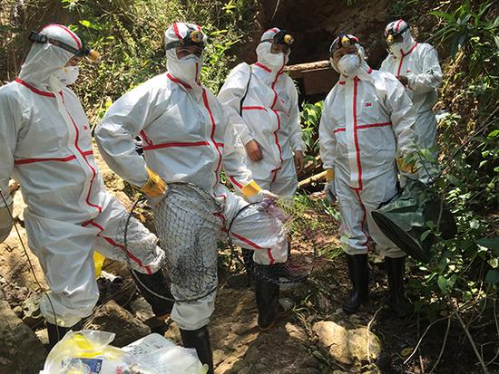
Figure 2: Note the lack of gloves on the researcher in the center and the lack of any facial protection such as safety glasses. This is despite the article mentioning the risk of being bitten by a bat, and even including that a researcher was already bitten by a bat.
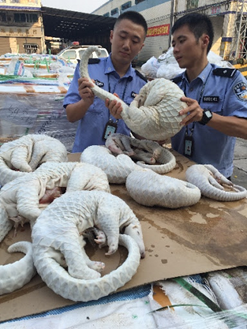
Figure 3: CCP border officers handling pangolins that died of coronavirus symptoms prior to the outbreak
To compound this theme of incompetence, Washington Post columnist, Josh Rogin, wrote that:
During interactions with scientists at the WIV laboratory, [US diplomats] noted the new lab has a serious shortage of appropriately trained technicians and investigators needed to safely operate this high-containment laboratory
What’s interesting is that the WIV deleted their press release mentioning this meeting, which is pictured below and archived here.
Figure 4: Photo depicting Rick Switzer (2), Jamison Fouss (6), and Dr. Shi Zhengli (4)
And an article25 in Nature notes:
worries surround the Chinese lab, too. The SARS virus has escaped from high-level containment facilities in Beijing multiple times, notes Richard Ebright, a molecular biologist at Rutgers University in Piscataway, New Jersey. Tim Trevan, founder of CHROME Biosafety and Biosecurity Consulting in Damascus, Maryland, says that an open culture is important to keeping BSL-4 labs safe, and he questions how easy this will be in China, where society emphasizes hierarchy. “Diversity of viewpoint, flat structures where everyone feels free to speak up and openness of information are important,” he says.
3.3.1 A note on biosafety levels
The term BSL-4 that was brought up in that Nature article refers to the biosafety level of the lab, with 4 being the highest. Rules followed by virologists in china26 prior to 2020 required that experiments with SARS1 and MERS be conducted at BSL-3, but that all other bat coronaviruses may be studied at BSL-2, the same biosafety level of a standard US dentists office.27 The head of the coronavirus research at the WIV, Shi Zhengli, said in an interview28 with Science magazine that:
The coronavirus research in our laboratory is conducted in BSL-2 or BSL-3 laboratories.
3.3.2 French Collaborators Pull Out
The WIV BSL-4 lab opened in 2015 in collaboration with France who was to supply 50 high-level researchers to work there between 2017 and 2022, this did not occur, the French cited China dominating the arrangements as the reason.29 As the Times reports:30
French specialists have knowledge in building and running BSL 4 laboratories, which were described by a senior civil servant in Paris as a “bacteriological atomic bomb”. But French firms got only minor roles in the building of the laboratory, according to Le Figaro and France Inter, the state broadcaster.
France Inter said that Technip, the French company supposed to certify that the building complied with safety standards, refused to do so after pulling out of the project in 2015. In the same year Alain Mérieux, the French pharmaceutical tycoon, resigned from the joint chairmanship of the committee heading the project. The French government has refused to say whether the 50 French researchers meant to move to Wuhan were blocked by the Chinese authorities or whether Paris failed to provide the funding.
The fact that the BSL-4 lab was not independently certified by Technip as was planned should be a warning sign that we do not know the type of security standards or protocols being observed at the WIV. The only non-Chinese company that was supposed to verify this apparently bailed out for unknown reasons, and French scientists that were supposed to go work at the lab (who could have reported safety concerns) were never sent there.
It is fair to say that the international community is not aware of what is going on at the WIV.
3.3.3 Comparing to other coronaviruses
So over a year after the pandemic began researchers have failed to find either the original bat population, or a confirmed intermediate species to which SARS2 might have jumped, or any serological evidence that any Chinese population, including that of Wuhan, had ever been exposed to the virus prior to December 2019. This is entirely unlike previous outbreaks — the intermediate host for SARS1 was found in four months,31 and MERS took only nine months.32 Surely this new disease having received far more attention should have had its host found far sooner?
3.4 Where is patient 0?
The first official case of the CCPVirus was recorded on the 17th of November 2019 in Wuhan, China, but by only the 2nd of December there was a man in France with the condition. Now this is a virulent disease but it is very curious that it got all the way to france in such a short time. To compound this the man wasn’t a world-traveller of any sorts but a fish-monger who had never set foot in China implying an even earlier French case.
On top of this, three of the first four cases – including the case on the 17th November – had no documented link to the Wuhan wet market33, 34 and “[no] epidemiological link was found between the first patient and later cases” making that origin story a total bust.
Now, the virologists in the natural camp do admit that it would not have come from the wetmarket,35, 36, 37 but the implied explaination of who patient 0 would have to be is even more ridiculous.
For the virus to have originated in Yunnan, where you would expect it to if it was natural zoonosis, first a group of bats would have to be frequently interacting with the intermediate host, preported to be Malayan pangolins (Manis javanica). These pangolins are not only critically endangered38, 39 and solitary creatures, but as the name suggests their main habitat is the Malayan peninsula, barely, if ever, crossing into china, see the figure below (sourced from here):
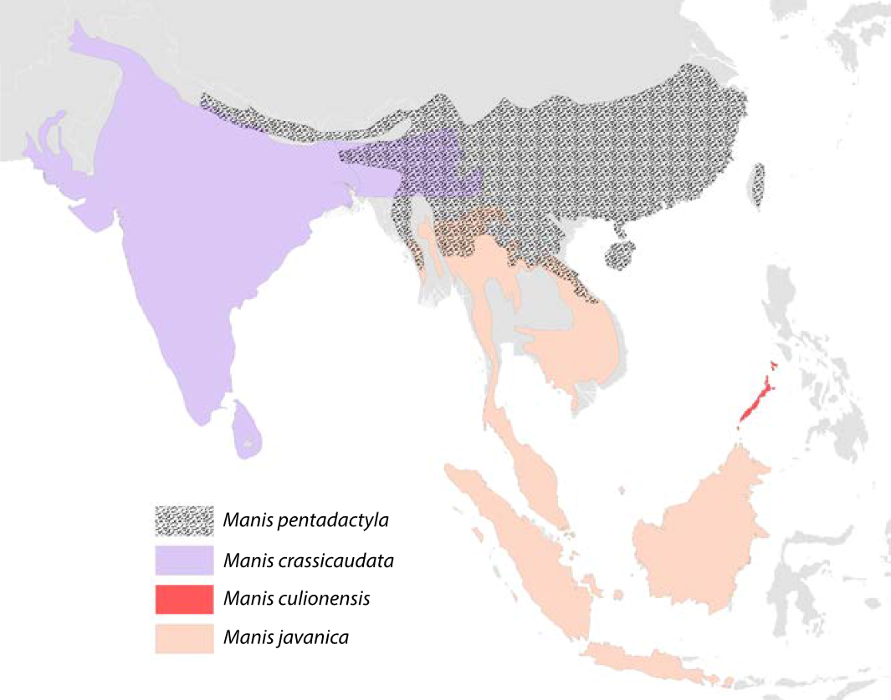
Figure 5: Species distribution map of the four extant pangolin species in Asia. A mix of colours within the map indicates an overlap in the different species’ distributions. The species’ ranges are based on the IUCN Red List assessments (IUCN 2014). Note: The distribution map is currently being updated by the IUCN Pangolin Specialist Group.
Upon the first successful infection of a pangolin, under a blue moon I would guess, the virus then must mutate some to acclimate to its new host,40 otherwise it would be destroyed by an immune response. This would leave behind a clue to follow, an older virus from before the pangolin contact that would remain in the bats, and again upon one of these pangolins transferring it to a human, but no such precursors have been found. Then this human who has been infected with the virus would have to pass it onto absolutely nobody as it acclimated to him on his way to Wuhan — thats right; one of the most infectious viruses out there would have to not infect even a single person on this journey of over 1000 miles.
3.4.1 The Disappearance of Huang Yanling
In early January, Chinese social media was abuzz with a huge claim: Huang Yanling, a researcher at the Wuhan Institute of Virology, was Patient Zero. This prompted the WIV to issue a statement41 (“中国科学院武汉病毒研究所声明”) refuting the claims directly:
[Note: this is a translation]
Unreliable information has been circulating on the Internet recently, saying that our graduate Huang Yanling is the so-called “patient zero” who was the first to be infected with the new coronavirus. After verification, our firm solemnly declares as follows:
Huang Yanling graduated from our institute with a master’s degree in 2015. During the course of [her] studies, [s]he studied the functions of bacteriophage lyase and the broad spectrum of antibacterial activity. After graduation, [s]he has been working and living in other provinces. [She has no] Infection and [is in] good health.
At this critical moment in the fight against epidemics, related rumors greatly interfered with the scientific research of our institute. We reserve the right to pursue legal responsibility according to law. I sincerely thank all circles of society for their care, support and help!
According to ResearchGate, Yanling’s last paper was indeed published in February 2015:
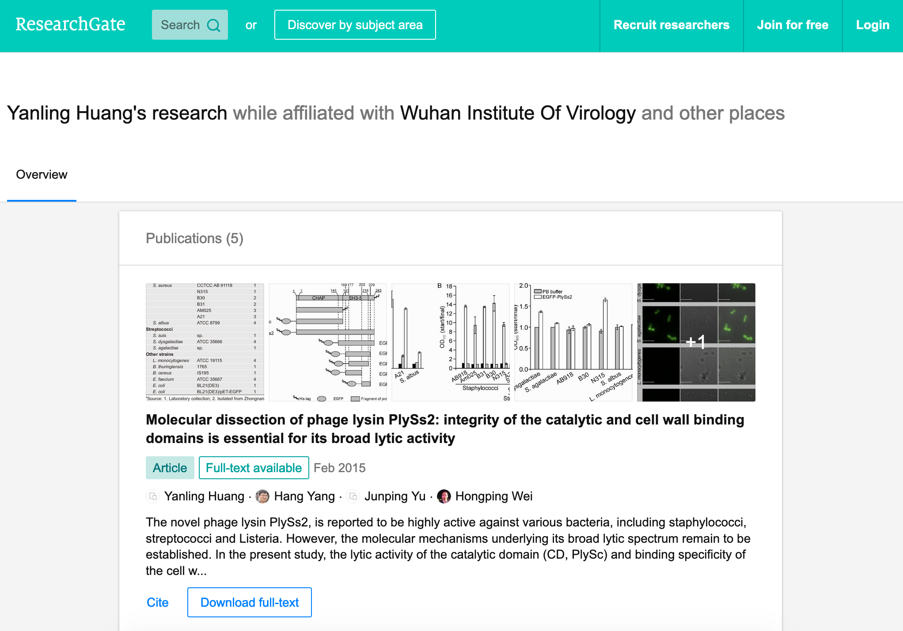
Figure 6: ResearchGate results for Huang Yanling (https://archive.is/DNbz8)
She is also still listed as a graduate student on the WIV’s Lab of Diagnostic Microbiology webpage:
Figure 7: WIV’s Lab of Diagnostic Microbiology graduates (https://archive.is/K9fB0)
Notably, her picture is missing, along two other students:
- 黄燕玲 2012级硕士研究生 - Huang Yanling 2012 Masters
- 王孟月 2013级硕士研究生 - Wang Mengyue 2013 Graduate Student
- 魏翠华 2013级硕士研究生 - Wei Cuihua 2013 Masters Degree Student
Almost all of the students on this page have a profile page. Here is Mengyue Wang’s:
Figure 8: Mengyue Wang’s profile page (https://archive.is/pkT4e)
Wei Cuihua also has a profile page. In fact, only Zhang Yun (张云2011级硕士研究生) and Huang Yanling (黄燕玲 2012级硕士研究生) don’t:
Figure 9: The result upon looking at the profile for Zhang Yun (https://archive.is/uGGVk) or Huang Yanling (https://archive.is/2SuNN)
So of 12 researchers listed, Huang Yanling is one of two with no profile picture and an empty profile page.
A Hong Kong-based reporter for Radio France International wrote:42
The rumors of the leaking virus in Wuhan Research Institute are still in progress, and there is news that ’patient zero’ is a researcher (February 17, 2020)
What made the incident even more confusing is that when a reporter from the Continental Beijing News inquired about the rumors about patient No. 0, the institute first denied the researcher Huang Yanling [worked there], but after learning that the person’s name was indeed on the Internet, he Acknowledged that this person had worked in the institute, but now [s]he has left the job and [her] whereabouts are unknown.
…
The Beijing News asked Shi Zhengli, a researcher specializing in bat coronavirus, and Chen Quanjiao, a researcher in the Influenza Virus Laboratory, both of them said it was unclear whether there was Huang Yanling in the institute. Netizens immediately pointed out that there was a yellow name on the institute’s official website, but the content under the name had been deleted.
What is most interesting about all of these claims is that they could easily be shut down by Huang Yanling’s public appearance. When Shi Zhengli was accused of spreading the virus, she posted on WeChat, “I swear with my life, [the virus] has nothing to do with the lab.”
Why has Huang Yanling not done the same? Surely she is aware of the rumors surrounding her on social media. Even if she was not aware, would it really be impossible for the Chinese government to get in touch with her and have her issue an in-person statement to the media?
It would only be impossible if she was dead.
3.5 What is with the sequence?
In 2015, the Wuhan Institute of Virology, along with researchers in the US and Switzerland, published a paper43 detailing how they made a chimeric SARS-like virus based on a coronavirus found in horseshoe bats, the proposed natural reservoir for SARS-CoV-2. This is what is known as gain-of-function research in virology, a task whereby virologists attempt to make the most infections virus they can to study how infection works.
3.5.1 It looks like GD Pangolin-CoV
Above I discussed the WIV’s PLA connections focusing in on a paper (Tommy Tsan-Yuk Lam et al, “Identifying SARS-CoV-2-related coronaviruses in Malayan pangolins”) that is oft-praised by chinese shills for its proof that this came from nature, but let’s look at what that paper actually finds.
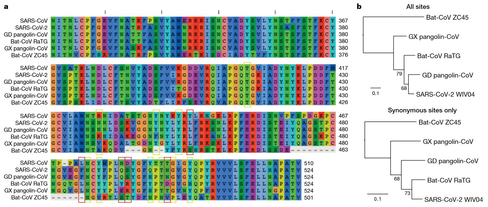
Figure 10: Analysis of the RBD sequence of similar coronaviruses
Allow me to walk you through the image above, what is shown is the amino acids that make up the spike protein of SARS-CoV-2 and similar viruses, where the red boxes indicate those acids that code for the ACE2 binding that allows the CCPVirus to be so infectious. Should even a single one of these acids be different the binding would not work as it currently does.
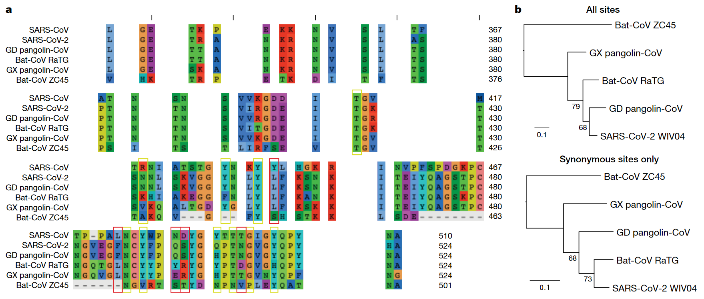
Figure 11: Analysis of the RBD sequence of similar coronaviruses with homology redacted.
For clarity, in the above I have removed unimportant sections of the chart where each virus is identical.
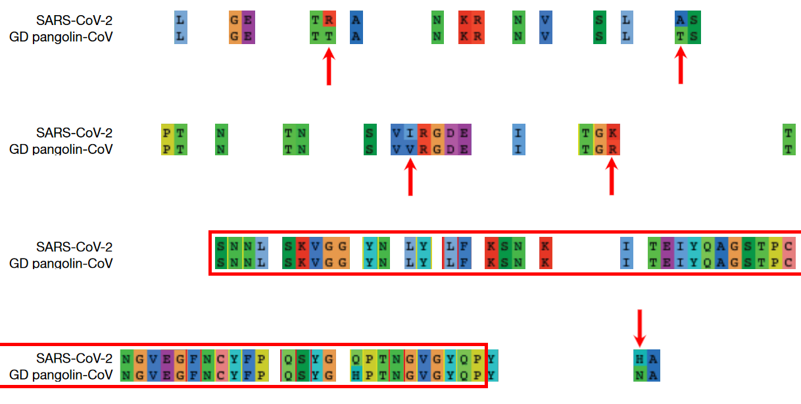
Figure 12: Analysis of the RBD sequence of similar coronaviruses with homology redacted showing only SARS-CoV-2 and GD pangolin-CoV
And here, I take this further by focusing in on only SARS-CoV-2 and GD pangolin-CoV. Now we can clearly see just how similar these 2 viruses are in their spike protein, being the only 2 that match where the ACE2 binding is coded for, and being entirely identical across the receptor binding domain (RBD) shown in row 3 and the start of row 4 above. And prior to the RBD they differ in only 4 places.
So what’s the big deal? It looks like it came from a pangolin, so what? Well, as the paper referenced above notes;
all of the pangolin coronaviruses identified to date lack the insertion of a polybasic (furin-like) S1/S2 cleavage site in the spike protein that distinguishes human SARS-CoV-2 from related betacoronaviruses (including RaTG13) and that may have helped to facilitate the emergence and rapid spread of SARS-CoV-2 through human populations.
To our knowledge, pangolins are the only mammals in addition to bats that have been documented to be infected by a SARS-CoV-2-related coronavirus. It is notable that two related lineages of coronaviruses are found in pangolins that were independently sampled in different Chinese provinces and that both are also related to SARS-CoV-2. This suggests that these animals may be important hosts for these viruses, which is surprising as pangolins are solitary animals that have relatively small population sizes, reflecting their endangered status. Indeed, on the basis of the current data it cannot be excluded that pangolins acquired their SARS-CoV-2-related viruses independently from bats or another animal host. Therefore, their role in the emergence of human SARS-CoV-2 remains to be confirmed.
So what is this saying? It is saying that in order for the pangolin similarities above to be explained by the disease spreading through a pangolin, first a bat carrying a mutated RaTG13 would have to come across an endangered pangolin, then this mutated RaTG13 would have to make the very unlikely inter-species jump to the pangolin where it must then somehow gain a polybasic furin-like cleavage site and then this pangolin has to find a human where there is a second, unlikely, inter-species jump.
Or… maybe it was made in a lab, as has been done many times before.
3.5.2 Insertion vs Mutation
Now, in a moment we will take a closer look at that polybasic cleavage site, because it is very important, the reason why is that coronaviruses have a 2-step process to gain entry into a cell. First they must bind to a receptor, either ACE2 or CD147, then the S2 spike protein subunit must be “cleaved,” if either does not take place the virus is severely limited in its ability to infect cells. But first allow me to discuss the difference between mutation and inseration.
3.5.2.1 Mutation
| CAA | ACU | AAU | UCA | CGU | AGU | GUU |
|---|---|---|---|---|---|---|
| CAA | ACU | AAU | UCA | CGU | AGU | GUG |
The table above shows a chain of nucleobases typical of a strand of RNA, those bases being adenine (A), guamine (G), cytosine (C), and uracil (U). In row 2 of this table you may note that the U right at the end has swapped to a G. This happens in nature all the time, and is the result of an error in the copying of the chain, but these errors are often fixed. When they arent fixed we have successful mutation, this is the process that underlies evolution.
The reason I display them as groups of 3 isn’t just for clarity, each grouping of 3 nucleobases makes a codon, which is then read by a rhibosome so that it knows what to do, it either says to start, to stop, or to assemble some amino acid. This is conceptually similar to CPU instructions if you are at all familiar with that.
It is important to understand that not every mutation will change what happens, there are multiple codons that code for the same thing in many cases, which is displayed in the table below.
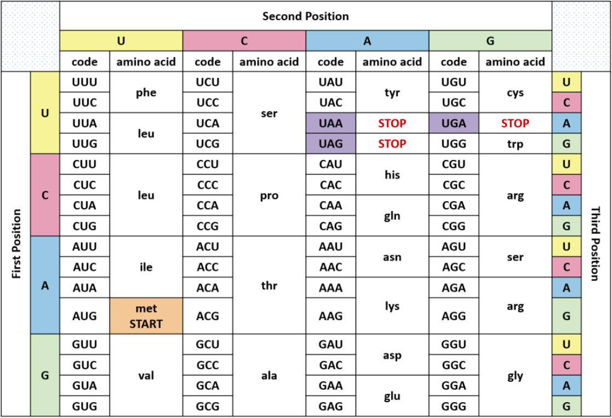
Figure 13: Table displaying codons and their meaning
To break this down, you have a matrix of each of the possible bases in the first position overlapping with the second position, and in each of those you go over each of the 4 possibilities for the third position. Now in this table you can see that UUA, UUG, CUU, CUC, CUA, and CUG all code for the same amino acid, leucine. So if you had CUU as your codon and it mutated into a CUA, it would make no difference, even if that CUA mutated further into a UUA, it would still have no effect. These are what are called silent, or synonymous, mutations.
3.5.2.2 Insertion
| CAA | ACU | AAU | UCA | CGU | AGU | GUG | ||||
|---|---|---|---|---|---|---|---|---|---|---|
| CAA | ACU | AAU | UCA | CCU | CGG | CGG | GCA | CGU | AGU | GUG |
Now in this table a different process has occurred, you can see that the above chain was seemingly cut and a smaller chain was spliced into the gap. This is what is known as insertion.
Insertions are rare, but can occur in nature44 when gene replication slips up. And as Banavali writes:45
Insertions can be anywhere in size from one base pair incorrectly inserted into a DNA sequence to a section of one chromosome inserted into another.
But crucially they are randomly sized, and often cause huge problems.
3.5.2.2.1 Reassortment
Natural insertion can come in 2 forms, either a part of the viral genome is incorrectly placed, or two viruses infect the same cell allowing for a process known as reassortment or recombination.
Recombinant viruses are what we use to create flu vaccines, the process goes as follows, first two separate but related viruses must infect the same cell (β-coronaviruses can only recombine with other β-coronaviruses).46 Then either site-specific, or site-nonspecific recombination must occur.
If site-specific recombination occurrs – which is the more likely option, due to the specificity of the location, natural origin believers agree with me on this47 – then as Howard Nash explains:48
both partners carry a well-defined specific site that is necessary for the recombination event and that contains the point of genetic exchange
So for our case that well-defined specific site would be the S1/S2 junction meaning the virus would have to recombine with another virus that has this PRRA at this site, meaning the naturalists need to find that source.
If site-nonspecific recombination is the culprit that would mean that in the course of reproduction the infected cell accidently takes a random part of the virus from somewhere else and puts it right at the S1/S2 junction, so this deletion elsewhere of PRRA would have to magically be the only thing that is taken and it would have to just so happen to be basically the perfect insertion possible.
3.5.2.3 The weird cleavage site of SARS-CoV-2
First off it is important to know about furin, this is one of a few different enzymes that can perform this cleavage, but what is special about furin is it cuts proteins in strictly defined places,49 making it very easy for viroligists to study.
These places it cuts are defined by an RxxR sequence50 (meaning an …-Argenine-x-x-Argenine-…, where x is any amino acid). Moreover, if you have an RRxR or an RxRR, then the cleavage efficiency is significantly increased.51
It is because of this that virologists took immediate note:52, 53
It was found that all Spike [proteins] with a SARS-CoV-2 Spike sequence homology greater than 40% did not have a furin cleavage site (Figure 1, Table 1), including Bat-CoV RaTG13 and SARS-CoV (with sequence identity as 97.4% and 78.6%, respectively). The furin cleavage site “RRAR” in SARS-CoV-2 is unique in its family, rendering by its unique insert of “PRRA”. The furin cleavage site of SARS-CoV-2 is unlikely to have evolved from MERS, HCoV-HKU1, and so on. From the currently available sequences in databases, it is difficult for us to find the source. Perhaps there are still many evolutionary intermediate sequences waiting to be discovered.
So to translate, no virus that is closely related to the CCPVirus has the furin cleavage site that allows for such a high transmissibility. That transmissibility bump is because the cleavage site allows the virus to activate its spike protein in a wider variety of cells and tissues.54
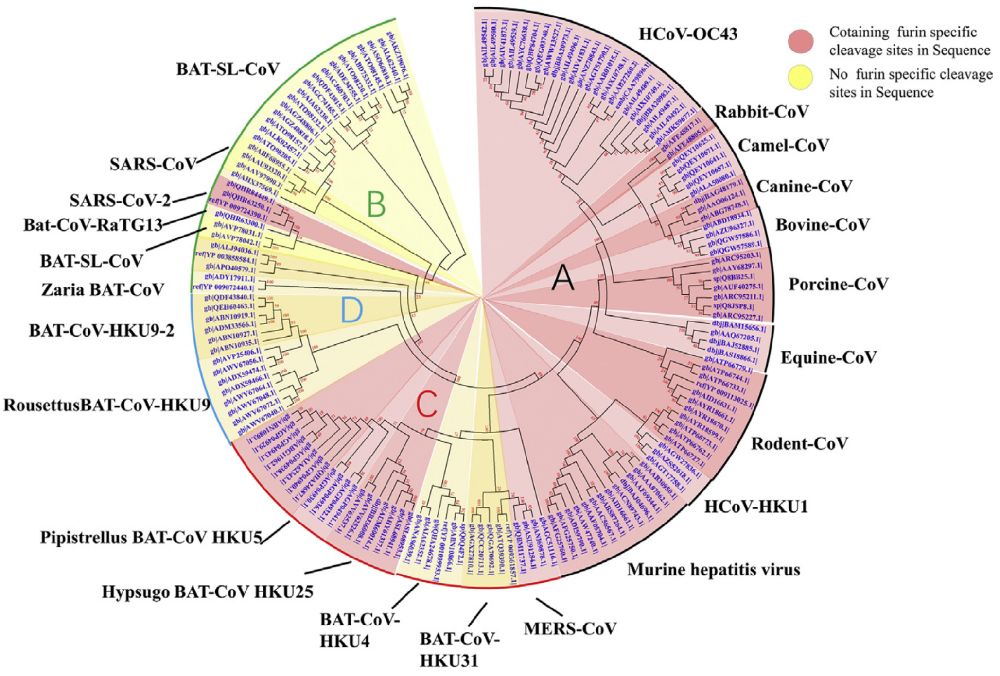
Figure 14: Evolutionary Relationships of β-CoV Taxa. The evolutionary history was inferred using the neighbor-joining method. The bootstrap consensus tree inferred from 500 replicates is taken to represent the evolutionary history of the taxa analysed. Branches corresponding to partitions reproduced in less than 50% bootstrap replicates are collapsed. The evolutionary distances were computed using the Poisson correction method and in the units of the number of amino acid substitutions per site. The analysis involved 155 amino acid sequences. All positions containing gaps and missing data were eliminated. There are a total of 711 positions in the final dataset. Evolutionary analyses were conducted in MEGA7. Red shading means containing cleavage site in sequences and yellow shading means no cleavage site in sequences. All sequences are from β-coronavirus, and the four subtypes are marked in different outline colors.
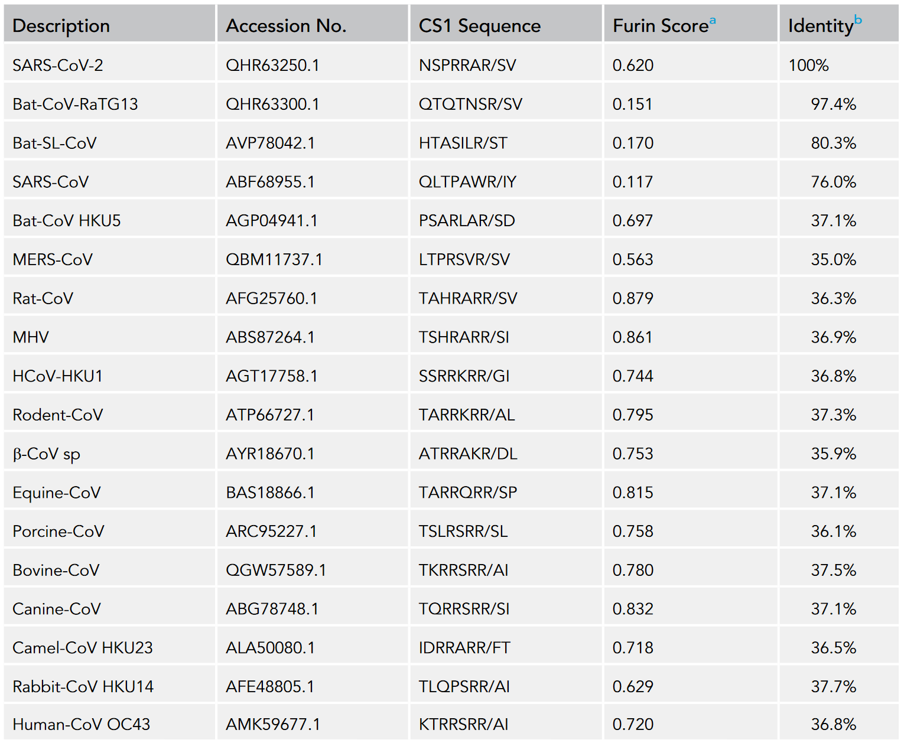
Figure 15: Furin Cleavage Probability of Spike Sequence Homology. ^{a}Scores are predicted by ProP 1.0 Server. Scores above 0.5 mean furin cleavable. ^{b}Identities compared with SARS-CoV-2 Spike protein.
This point is made clearer in the above diagram and its accompanying table55 showing 3 different strains of the CCPVirus that have the cleavage site in a sea of their closest neighbors all without it. The closest relative with a furin site is the HKU5 strain, isolated by the Shi Zhengli team in 2014 in Guangzhou from bats of the genus Pipistrellus (added to GenBank in 2018). But it is a very distant relative — their spike proteins share only 37.1% sequence identity in the spike protein.
So the virologists are puzzled. Where did this 12 nucleotide insert come from? Could it be lab-made? Well, virologists have studied furin sites in coronaviruses for decades, and have introduced many artificial ones in a lab. For example, an American team had inserted RRSRR into the spike protein of the first SARS-CoV back in 2006:
To investigate whether proteolytic cleavage at the basic amino acid residues, were it to occur, might facilitate cell–cell fusion activity, we mutated the wild-type SARS-CoV glycoprotein to construct a prototypic furin recognition site (RRSRR) at either position.
more examples here
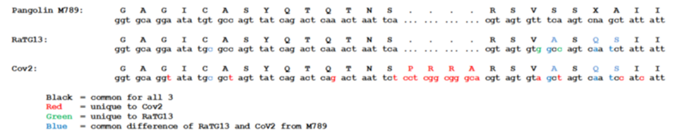
Figure 16: The insertion is only PRRA
So thats all well and good, it has a furin cleavage site, maybe it picked it up from somewhere, I did say that random insertion can occur in nature after all. This is true, but I draw your attention to figure 15 above, showing the actual insertion and it is only PRRA. That RRA then continues on to form an RRAR that is needed for the furin cleavage site (RRxR=RRAR). But then what purpose does the P serve, if this was man-made it should server a purpose, right? This is true, and the P quite possibly does serve a purpose, it is believed that this leading proline results in the addition of O-linked glycans that create a muncin-like domain that helps to sheild key residues of the spike protein,56 as has been observed in other viruses. This sheild allows the virus to hide from anti-bodies.
So this insertion seems to be just the perfect thing to add, with no draw-backs: it gains a P to sheild from immune response and an RRAR to allow a greater range of cells that it may infect. If this was a freak natural occurence you would expect a whole mess of crap to come over not just the exact snippet that is required for increased infectivity.
3.5.3 Is RaTG13 even real???
So above I have been displaying evidence that the virus is synthetic assuming that RaTG13 is some natural base that was used to create it because they are so similar. But let’s look closer at RaTG13 and see if that is even real, because if it’s not then the case that this thing is natural is completely destroyed as that is basically the sole piece of evidence the natural crowd have.
For my research on this topic I am indebted to an article by Nerd Has Power on weebly.
3.5.3.1 Who dares to carry out such a deceitful action?
The sequence of RaTG13 was reported by Shi Zhengli, a researcher from our old friends the Wuhan Institute of Virology. Dr. Shi is the top coronavirus expert in China. She has gained the nickname of “batwoman” because she and her team have a long history of capturing wild bats in caves all over for the purpose of detecting and sometimes isolating coronaviruses within them. But of course it isn’t worth thinking of the possibility that they would bring some of these bats back to Wuhan with them, to do so would be to engage in a conspiracy theory. We must perish the thought that governments who engage in routine ethnic cleansing would do something so dangerous and lie about it.
As publicly stated, the goal of her research is to identify animal coronaviruses that have the potential of crossing-over to infect humans and thereby help the public avoid SARS-like disasters in the future.
Ironically, contrary to this self-portrait, since the very beginning of the current pandemic, Shi Zhengli has been singled out as THE suspect, who may have created the Wuhan coronavirus and, in doing so, caused a world-wide disaster. Interestingly, on Jan 23rd, 2020, just before this “rumor” started to soar though the roof, Shi published a paper in Nature,57 who have censored over 1000 articles at the request of the CCP,58 where she compared the freshly obtained sequence of the Wuhan coronavirus with those of other coronaviruses and thus delineated an evolutionary path of this new virus. In this publication, all of a sudden and out of nowhere, Shi reported this bat coronavirus, RaTG13, which pampered the public and seemingly helped shape a consensus in the field that the Wuhan coronavirus is of a natural origin. But why on earth was Shi sitting on this virus for 7 years before releasing?
As stated in the paper, RaTG13 was discovered from Yunnan province, China, in 2013. It is said that her lab collected some bat feces in 2013 and analyzed these samples for possible presence of coronaviruses based on genetic evidence. To put it into plainer words, she has no physical proof for the existence of this RaTG13 virus. She only has its sequence information, which is nothing but a string of letters similar to my tables above. Had I posted them with the correct credentials I could claim that I, too, have proof of a new virus.
3.5.3.2 Can the sequence of such a virus be fabricated?
It cannot be any easier. It takes a person less than a day to TYPE such a sequence (less than 30,000 letters) in a txt file. And it would be a thousand times easier if you already have a template that is about 96% identical to the one you are trying to create. Once the typing is finished, one can upload the sequence onto public databases. Contrary to general conception, such databases do not really have a way to validate the authenticity or correctness of the uploaded sequence. It relies completely upon the scientists themselves — upon their honesty and consciences. Once uploaded and released, such sequence data becomes public and can be used legitimately in scientific analysis and publications.
Now, does this RaTG13 sequence qualify as credible evidence in judging the matter? Well, remember, a central part of the matter is whether or not this Wuhan coronavirus was engineered or created by Shi Zhengli. It is Shi, not anybody else, who is the biggest suspect of this possible crime. Given the circumstances, wouldn’t she have a strong enough motive to be deceitful? If the evidence she raised to prove herself innocent was nothing but a bunch of letters recently typed in a word file, should anyone treat it as valid evidence?
3.5.3.3 RaTG13, if it truly exists, should never be neglected by Shi for a period of seven years
Let’s now think about this from another direction. The sequence of RaTG13 is highly alarming – it clearly shows a potential of the virus to infect humans.
Within the spike protein of a β-coronavirus, there is a critical piece named the receptor-binding domain (RBD), which dictates whether or not this virus can use the ACE2 receptor on the surface of our cells and thereby infect humans. I discussed this prevously when noting similarities between the CCPVirus and GD Pangolin-CoV.
As a routine, when Shi’s team finishes collecting samples and confirms the presence of a coronavirus, the first thing they would do is to look at the sequence of the virus’ RBD. If there is resemblance between this sequence and that of the SARS virus (rarely so), their blood would boil because they have found something that may jump over to humans. It also means that top-journal publications are coming their way, so big bucks for Shi.
In 2013, Shi made her fame in the coronavirus field by publishing in Nature two bat coronaviruses (Rs3367 and RsSHC014), which share considerable sequence similarity with SARS in the RBD region.59 This work, for the first time, proved a bat origin of SARS. In the following years, her team continued to publish articles, featuring additional bat coronaviruses that share these important sequence motifs.60, 61
So let’s look at Rs3367 and RsSHC014 and compare them to RaTG13. It would stand to reason that RaTG13 would be less like SARS-1 in the RBD, or else she would have published that as the smoking gun.
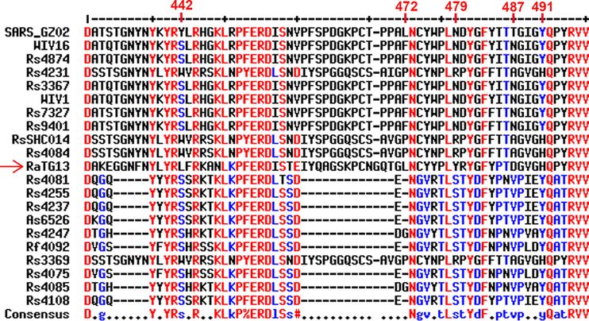
Figure 17: Sequence alignment comparing the RBDs of SARS (top) and RaTG13 (red arrow) to RBDs of bat coronaviruses that Zhengli Shi published in high-profile journals from 2013-2017. Amino acid residues highlighted by Shi as critical for binding human ACE2 receptor are labeled in red text on top. Alignment was done using the MultAlin webserver (http://multalin.toulouse.inra.fr/multalin/).
The image above is similar to the table I used to show the similarities with GD Pangolin-CoV earlier, where the acids that are important for binding to ACE2 are pointed out in red along the top.
By appearance, RaTG13 clearly belongs to the “good-looking” group. It rivals with the best ones in its completeness of the RBD sequence as well as in the conservation of critical amino acids. While a single amino acid insertion is observed (the G shortly before 472), it occurs in a variable region and can be easily tolerated without affecting the protein function.
Importantly, RaTG13 preserves the binding motifs as much as, if not better than, any other bat coronavirus in Shi’s list. At position 442, RaTG13 has a “L”, which beats most, if not all, bat viruses in resembling the “Y” in the SARS RBD as “L” and “Y” both mediate hydrophobic interactions.
At position 472, RaTG13 is the only bat coronavirus that has the residue “L”, which is identical to SARS. Although the amino acids at the other three positions are not identical to their counterparts in SARS, they are all conservative mutations, which may not negatively impact the protein’s function.
In fact, a very recent publication confirmed that the RBD from RaTG13, like SARS RBD, can indeed bind the human ACE2 receptor (Note: the RaTG13 RBD gene used in this work was synthesized. If only Shi was willing to provide the virus samples that she definitely has, it sure would save them the trouble of making it from scratch).
As expert as Shi is, she only needed to take one peek at the sequence of RaTG13’s RBD and immediately realize: this virus closely resembles SARS in its RBD and has a clear potential of infecting humans. If Shi’s public statement is true and she indeed intends to discover bat coronaviruses with a potential to cross-over to humans, how could she possibly overlook this extremely interesting finding of RaTG13? If this RaTG13 was discovered SEVEN years prior in 2013, why did Shi not publish this astonishing finding earlier? Why did she let the “less-attractive” viruses take the stage? Why did she decide to publish such a sequence only when the current outbreak took place and people started questioning the origin of the Wuhan coronavirus?
None of this makes sense. These facts only add to the suspicion – Shi Zhengli either was directly involved in the creation of this virus, or helped cover it up, or both.
3.5.3.4 A closer look at the gene sequence of RaTG13’s spike reveals clear evidence of human manipulation
So remember above the discussion on synonymous or silent mutation, because it is relevant in analysing RaTG13’s sequence.
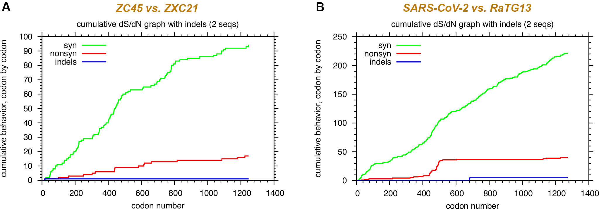
Figure 18: Comparing the nucleotide sequences of different spike proteins on the synonymous mutations (green curve) and non-synonymous mutations (red curve) reveals evidence of human manipulation. (A) is a comparison between two related bat coronaviruses ZC45 (MG772933) and ZXC21 (MG772934), which are nature-borne. (B) is a comparison between the Wuhan coronavirus (NC_045512) and RaTG13 (MN996532) which shows a pattern inconsistent with natural evolution. Sequence alignment was done using EMBOSS Needle. Synonymous Non-synonymous Analysis was performed using SNAP at www.hiv.lanl.gov (Korber B. HIV Signature and Sequence Variation Analysis. Computational Analysis of HIV Molecular Sequences. 2000; Chapter 4:55-72.).
In part (A) above, the synonymous vs non-synonymous mutations are tallied up as one travels along the codons of the spike protein of ZC45 and ZXC21, 2 closely related bat coronaviruses.
As expected, there are more synonymous mutations than non-synonymous mutations. Importantly, a correlation between the two curves is clearly present: they climb up and go through plateaus in a roughly synchronized manner. Throughout the whole length of the gene, at any point, the ratio between the accumulated synonymous and non-synonymous mutations is maintained at around 5:1, which is exactly what one would expect with there being 5 times more possible synonymous mutations than there are non-synonymous.
In part (B) on the other hand, the non-synonymous line does some crazy things. One thing that is immediately apparant is that, in the second half of the sequence, while the green curve continues to grow steadily, the red curve stays flat. For a region as wide as over 700 amino acids (corresponding to 2100 nucleotides), which is statistically substantial, the synchronization between the two curves is non-existent. Surprisingly, or maybe not so surprisingly, at the end, the final counts of synonymous and non-synonymous mutations yield a ratio of just over five, consistent with what’s expected out of natural evolution.
Let’s bring out some numbers to help us better comprehend the difference here. Let’s focus on the S2 protein, the second half of the spike ranging from 684 to 1273 (numbering according to the Wuhan coronavirus). Detailed analysis of this region reveals that, between ZC45 and ZXC21, a total of 32 nucleotides have changed and 5 of them lead to amino acid mutations (27 synonymous mutations vs. 5 non-synonymous mutations). It is, again, consistent with the scenario of natural evolution: roughly every six nucleotide changes results in the change of one amino acid; as the synonymous/non-synonymous ratio is about 5:1. In contrast, for the same S2 region, between the Wuhan coronavirus and RaTG13, there are a total of 90 nucleotide changes and only two amino acid mutations. Here, every 45 nucleotide changes correspond to one amino acid change. The synonymous/non-synonymous ratio is 44:1.
It is noteworthy that ZC45 and ZXC21 share ~97% sequence identity, just like that between the Wuhan coronavirus and RaTG13. So, the above comparison is very proper and reliable.
How could Shi Zhengli fail so badly in fabricating the RaTG13 sequence? While, when I said it was easy to type out a fake sequence that is 96% identical to a template, I did not say that it is easy to maintain a reasonable synonymous/non-synonymous ratio throughout the whole genome. Unfortunately for Shi, when she had to come up a good sequence for S1 and the RBD within it (she knows that this part will be scrutinized the most), she had somehow exhausted the number of non-synonymous mutations she could use here. To maintain a reasonable synonymous/non-synonymous ratio for the whole spike-encoding gene (we can actually give her some credit here as she did remember to get it close to 5:1), she had to strictly limit the number of non-synonymous mutations in the S2 half of spike, which ended up flattening the red curve (kek). It is hard to be a cheater after all.
3.5.4 The E protein
So we have had a deep-dive into the spike protein of various viruses because it is super important in that it is what allows it to infect humans. But there is another protein called the E protein, found in β-coronaviruses, that is just a structural protein, this means that many mutations can accumulate in the E protein without really causing any issues in terms of the reproduction of the virus. This means that you can look at the E protein to determine how distant two viruses are, as you can measure this accumulation of mutations in these structural proteins.
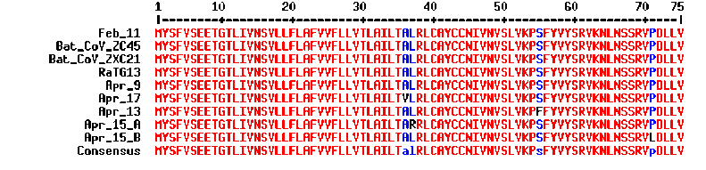
Figure 19: Alignment of E proteins of bat and human coronaviruses shatters the notion that the Wuhan coronavirus came from nature. While the early copies of Wuhan coronavirus share 100% identity of the E protein with ZC45, ZXC21, and RaTG13, sequence data of most recent Wuhan coronaviruses indicates that mutation has been observed in four different locations. Accession numbers of viruses (not including the ones listed in the graph above): Feb_11: MN997409, April_9: MT300186, Apr_13: MT326139, Apr_15_A: MT263389, Apr_15_B: MT293206, Apr_17: MT350246.
So in the above table you can see that the E proteins of ZC45, and ZXC21 are identical, which supports the idea that they are closely related. But what is striking is that RaTG13 and the CCPVirus are also identical to these 2, despite them having very low homology elsewhere which would imply them to be distaltly related. Whats more is that after only a few months in the wild the CCPVirus is already starting to accumulate non-synonymous mutations in this protein, so it’s very odd that RaTG13, a supposedly 7 year old virus, looks anything like those 2 if it evolved everywhere else enough to become the CCPVirus.
3.6 WIV Researcher Accuses Director of Selling Infected Lab Animals
An article62 published in UPI discusses accusations levied against WIV director, Wang Yanyi, that he was selling infected lab animals to the Huanan Seafood Market:
Wuhan, the central Chinese city in Hubei where the outbreak began, is home to the Wuhan Institute of Virology. On Monday, Wang Yanyi, director of the research center, denied allegations that animals used in lab experiments were resold at Huanan Seafood Market, which Chinese authorities have said is ground zero for COVID-19.
The institute had previously denied the outbreak began among lab technicians, including a woman identified as Huang Yanling. Huang was rumored to be “patient zero” on Chinese social media.
Wang’s statement came after messages on Chinese social media claimed the director had been “frequently” reselling lab animals to Huanan market vendors. Chen Quanjiao was the named author of the social media messages, and the posts included photos of Chen, according to NTD Television and other Chinese dissident news services.
Chen is a researcher at the lab. On Tuesday she made a public statement claiming her identity had been stolen. Chen may have been detained, according to Chinese-language news service Sound of Hope.
Social media posts about the institute were scrubbed by Tuesday. Wang Gaofei, chief executive of social media platform Weibo, condemned the posts as “fake news” and said the messages originated from an overseas IP address, according to multiple press reports.
Chen later responded:63
Chen Quanjiao, a researcher with the Wuhan Institute of Virology, has refuted an online rumor that claimed the novel coronavirus was leaked from the institute, according to a statement published on its official website on Monday evening. Someone faked her identity, she said.
…
The statement came after a rumor went viral on Chinese social media platform Weibo, saying Chen reported Wang Yanyi, director of the institute, for leaking the virus. Her ID number was included in the [supposedly] fabricated post on Weibo.
…
Chen has been working on influenza viruses at the institute since 2001, according to the official website.
I’ll let the reader decide what is more likely, whether someone was able to fake what should be a pretty high security ID card, hack into a Weibo account, and then get Chen’s picture with the ID.64 Or, whether Chen blew the whistle and was punished by the CCP.
Now, let it be noted that this sale of animals would not be unheard of, as chinese news outlet, ECNS, reports:65
Medical staff and experts have long been asking for better regulation and supervision of biological research institutes in China, but with mixed results.
A top academician at the Chinese Academy of Engineering earned 10.17 million yuan ($1.46 million) by illegally selling off lab animals and experimental milk, according to a report in the Shanghai-based The Paper.
3.7 Conflicts of Interest
Many virologists have been engaging in gain-of-function research as a matter of routine for years, an MIT Technology Review editor, Antonio Regalado, said that should it be shown that the CCPVirus was lab made “it would shatter the scientific edifice top to bottom.” By this, it seems that the virology establishment has a great incentive to protect their – oh so important – research. So what if this virus escaped, it’s probably a freak accident, they would think. They can’t let such a thing get in the way of their work, that would be the true tragedy. So they publish a paper here and there and come together in force to ensure the press wont go telling any inconvenient truths.
3.7.1 Daszak
One of the first major blows to the then hypothesis that the virus came from a lab was in the form of a prominent open letter66 published in the Lancet on the 19th of Februrary 2020. This was organised by EcoHealth Alliance president, Peter Daszak.
Figure 20: Peter Daszak, president of EcoHealth Alliance New York
The signatories of this letter proudly claim “no competing interests,” but Daszak’s organisation is responsible for securing funding from the NIH for gain-of-function coronavirus research at the WIV. And the nature of this research was not even hidden by Shi, as her grant proposals indicate:
Test predictions of CoV inter-species transmission. Predictive models of host range (i.e. emergence potential) will be tested experimentally using reverse genetics, pseudovirus and receptor binding assays, and virus infection experiments across a range of cell cultures from different species and humanized mice.
We will use S protein sequence data, infectious clone technology, in vitro and in vivo infection experiments and analysis of receptor binding to test the hypothesis that % divergence thresholds in S protein sequences predict spillover potential.
What this means, in non-technical language, is that Dr. Shi set out to create novel coronaviruses with the highest possible infectivity for human cells. Her plan was to take genes that coded for spike proteins possessing a variety of measured affinities for human cells, ranging from high to low. She would insert these spike genes one by one into the backbone of a number of viral genomes (“reverse genetics” and “infectious clone technology”), creating a series of chimeric viruses. These chimeric viruses would then be tested for their ability to attack human cell cultures (“in vitro”) and humanized mice (“in vivo”). And this information would help predict the likelihood of “spillover,” the jump of a coronavirus from bats to people.
What’s more is on the 9th of December, before the outbreak was widely known, Daszak gave an interview67 on This Week in Virology in which he talked in glowing terms of how researchers at the Wuhan Institute of Virology had been reprogramming the spike protein and generating chimeric coronaviruses capable of infecting humanized mice.
“And we have now found, you know, after 6 or 7 years of doing this, over 100 new sars-related coronaviruses, very close to SARS, some of them get into human cells in the lab, some of them can cause SARS disease in humanized mice models and are untreatable with therapeutic monoclonals and you can’t vaccinate against them with a vaccine. So, these are a clear and present danger…
“Interviewer: You say these are diverse coronaviruses and you can’t vaccinate against them, and no anti-virals — so what do we do?
“Daszak: Well I think…coronaviruses — you can manipulate them in the lab pretty easily. Spike protein drives a lot of what happen with coronavirus, in zoonotic risk. So you can get the sequence, you can build the protein, and we work a lot with Ralph Baric at UNC to do this. Insert into the backbone of another virus and do some work in the lab. So you can get more predictive when you find a sequence. You’ve got this diversity. Now the logical progression for vaccines is, if you are going to develop a vaccine for SARS, people are going to use pandemic SARS, but let’s insert some of these other things and get a better vaccine.”
Dr. Daszak is referring to the fact that once you have generated a novel coronavirus that can attack human cells, you can take the spike protein and make it the basis for a vaccine, this is the ostensive benefit of gain-of-function research, but he leaves out the massive danger.
3.7.2 The WHO investigators [4/10]
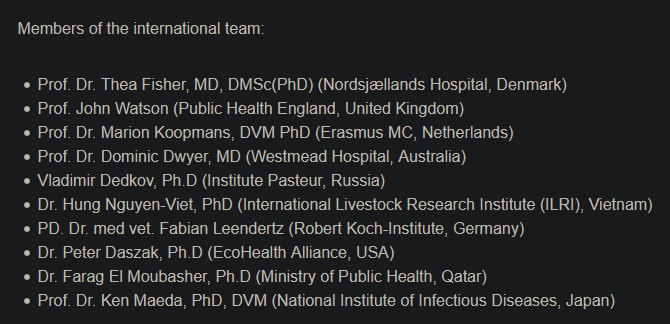
Figure 21: (See: https://www.who.int/health-topics/coronavirus/origins-of-the-virus)
When making the lab-leak argument you will no doubt be bombarded with articles that tell you about a WHO team who proved a natural origin, I experienced this very thing in a debate I had on the topic. The team is made up of the following:
[ ]Prof. Dr. Thea Fisher, MD, DMSc(PhD) (Nordsjællands Hospital, Denmark)[ ]Prof. John Watson (Public Health England, United Kingdom)[ ]Prof. Dr. Marion Koopmans, DVM PhD (Erasmus MC, Netherlands)[X]Prof. Dr. Dominic Dwyer, MD (Westmead Hospital, Australia)[ ]Vladimir Dedkov, Ph.D (Institute Pasteur, Russia)[X]Dr. Hung Nguyen-Viet, PhD (International Livestock Research Institute (ILRI), Vietnam)[ ]PD. Dr. med vet. Fabian Leendertz (Robert Koch-Institute, Germany)[X]Dr. Peter Daszak, Ph.D (EcoHealth Alliance, USA)[X]Dr. Farag El Moubasher, Ph.D (Ministry of Public Health, Qatar)[ ]Prof. Dr. Ken Maeda, PhD, DVM (National Institute of Infectious Diseases, Japan)
(I have indicated conflicts of interest with an [X])
You will recall all of Daszak’s shady dealings from above, but I have found more minor conflicts of interest for 3 other members, indicating that at least 40% of the team had a conflict of interest, and this is from only minor googling. In addition to these public conflicts of interest I note that the remaining 6 investigators have done absolutely no investigating into the lab-leak theory, brushing the entire thing off with a single citation to a paper by Kristian G. Andersen et al. that I utterly tear apart below (see: 3.9.2).
3.7.2.1 Hung
Dr. Hung Nguyen-Viet works at the International Livestock Research Institute, a group that receives funding from the Chinese government and its allies.68
3.7.2.2 Farang
Dr. Farang El Moubasher works for the Quatar govenrment, a strategic ally of China.
3.7.2.3 Dwyer
Dr. Dominic Dwyer works for Westmead Hospital, who have reported ties to the CCP’s Uighur organ theft.69
3.8 Wuhan CDC: An Alternative Source
Thusfar the WIV has been taken to be the prime suspect for the release, but there is a second possibility, the BSL-2 lab run by the CCDC, the Wuhan Centre for Disease Control (WhCDC). This lab, being less than 3 miles from the Huanan Seafood Market may not be discounted. Esteemed Chinese researchers released a mysterious paper, The possible origins of 2019-nCoV coronavirus, on ResearchGate in early February. The paper, authored by Botao Xiao and Lei Xiao, from the South China University of Technology, has since been redacted.
Figure 22: An error page presented upon attempting to access http://doi.org/10.13140/RG.2.2.21799.29601
Botao Xiao and Lei Xiao’s profiles also appear to have disappeared from ResearchGate. https://www.researchgate.net/profile/Botao_Xiao leads to a directory search page.
According to Google Scholar, Botao Xiao has published peer reviewed papers in the fields of “Biophysics, Synthetic Biology, Molecular Biology, Biomedical Engineering, [and] Biomechanics”:
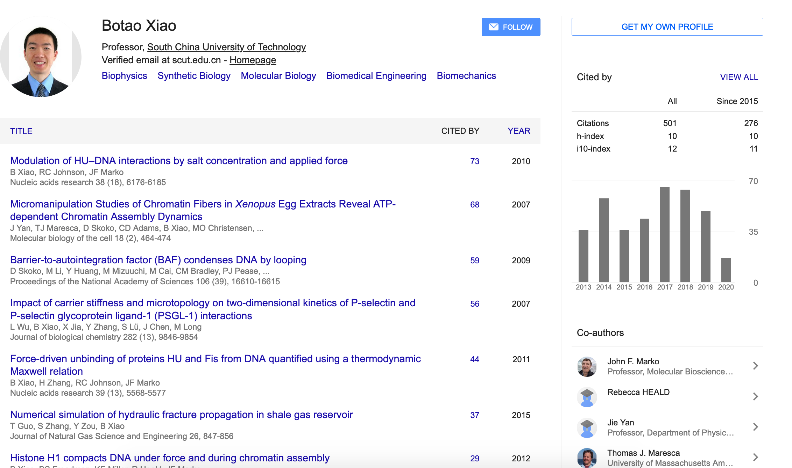
Figure 23: Google Scholar results for Botao Xiao https://scholar.google.com/citations?user=ap6QWmcAAAAJ&hl=en
He received his PhD from Northwestern University and spent two years at Harvard Medical School.70
This is to say that Botao is no fool, he is more educated than the average person in this area.
The abstract of his paper is as follows:
The 2019-nCoV has caused an epidemic of 28,060 laboratory-confirmed infections in human[s] including 564 deaths in China by February 6, 2020. Two descriptions of the virus published [in] Nature this week indicated that the genome sequences from patients were almost identical to the Bat CoV ZC45 coronavirus. It was critical to study where the pathogen came from and how it passed onto human[s]. An article published [in] The Lancet reported that 27 of 41 infected patients were found to have contact with the Huanan Seafood Market in Wuhan. We noted two laboratories conducting research on bat coronavirus in Wuhan, one of which was only 280 meters from the seafood market. We briefly examined the histories of the laboratories and proposed that the coronavirus probably originated from a laboratory. Our proposal provided an alternative origin of the coronavirus in addition to natural recombination and intermediate host.
To this end they make a number of claims that I shall address below.
3.8.1 There Are Few Bats in Wuhan
The bats carrying CoV ZC45 were originally found in Yunnan or Zhejiang province, both of which were more than 900 kilometers away from the seafood market. Bats were normally found to live in caves and trees. But the seafood market is in a densely-populated district of Wuhan, a metropolitan [area] of ~15 million people. The probability was very low for the bats to fly to the market. According to municipal reports and the testimonies of 31 residents and 28 visitors, the bat was never a food source in the city, and no bat was traded in the market. There was possible natural recombination or intermediate host of the coronavirus, yet little proof has been reported.
Earlier, Dr. Xiao asserted that SARS-CoV-2 is “86 to 96 percent” similar to the already known Bat-CoV-ZC45 virus, and uses this to claim that SARS-CoV-2 likely originated in bats.
His next claim is that it is very unlikely that there would be bats naturally living in the metropolitan distict of Wuhan, and in fact no bats were traded at the market at all. But let us go one step further: there were no bats in Wuhan in December, because bats hibernate in the winter!
An article71 in the Lancet confirms this and Xiao’s assertion that bats were not sold at the market.
3.8.2 Horseshoe Bats Were Present in WhCDC Labs
WHCDC hosted animals in laboratories for research purpose, one of which was specialized in [pathogen] collection and identification[4-6]. In one of their studies, 155 bats including Rhinolophus affinis were captured in Hubei province, and [450 other] bats were captured in Zhejiang province[4].
The paper Xiao references as [4] is “Phylogeny and Origins of Hantaviruses Harbored by Bats, Insectivores, and Rodents (February 7, 2013).” This paper agrees with Xiao, saying:
A total of 450 bats of eight different species were captured in Longquan city and Wenzhou city, Zhejiang Province in the spring of 2011 (Figure 1 and Table 1). Similarly, 155 bats representing eight species were captured in Hubei Province in the spring of 2012. A total of 81 insectivores (representing two species – Anourosorex squamipes and Suncus murinus) were captured in Lianghe county, Yunnan Province in the spring of 2010 and autumn of 2011. In 2006, two shrews (from the species Sorex isodon and Suncus murinus) were collected from Yakeshi city, Inner Mongolia Autonomous Region.
So that’s strike 2 in favour Xiao, can he get a third?
3.8.3 A WhCDC Researcher Was Once Attacked By Bats
The expert in collection was noted in the Author Contributions (JHT). Moreover, he was broadcasted for collecting viruses on nation-wide newspapers and websites in 2017 and 2019. He described that he was once by attacked by bats and the blood of a bat shot on his skin. He knew the extreme danger of the infection so he quarantined himself for 14 days[7]. In another accident, he quarantined himself again because bats peed on him. He was once thrilled for capturing a bat carrying a live tick[8].
Where [7] and [8] are:
- [7] Tao P. Expert in Wuhan collected ten thousands animals: capture bats in mountain at night. Changjiang Times 2017. (archived)
- [8] Li QX, Zhanyao. Playing with elephant dung, fishing for sea bottom mud: the work that will change China’s future. thepaper 2019. (archived)
[7], translated to english states the following:
“There are a large number of unknown viruses in bats, and the more thorough their research, the more beneficial it is to maintaining human health.” In 2012, Tian Junhua began research on bats, and the environment for collecting bat samples was extremely harsh. The bat cave emits a foul odor and is extremely dangerous on cliffs; bats carry a large amount of viruses and there is a risk of infection if they are not careful. Apart from knowing bats in books, Tian Junhua’s knowledge of bats can be said to be almost zero. But without fear, he took his wife to the mountain to catch bats.
…
However, in the operation, Tian Junhua forgot to take protective measures. The urine of the bat dripped like raindrops on the top of his head. If he was infected, he would not be able to find the medicine. Tian Junhua tried to calm himself down: “As long as symptoms do not appear after the incubation period of 14 days, he will be lucky to have escaped.” After returning home, he took the initiative to keep a distance from his wife and children, isolated for half a month, until he found no physical abnormalities, he was comfortable.
The wings of the bat carry sharp claws, and a clip is needed to catch the bat. The big bat is easy to spray blood after being injured by the clip; several times the bat blood is directly sprayed on Tian Junhua’s skin. If it is infected, the consequences will be unimaginable. But Tian Junhua did not flinch at all, and fortunately he escaped the infection.
…
With his strong perseverance, Tian Junhua captured nearly 10,000 bats, and sincerely focused on the laboratory to study these bat samples. In 2012, Tian Junhua discovered a virus in the bat samples collected by Huangpi, named “Yellow Virus”. The research report was published on the cover of the internationally renowned academic journal “PloS Pathogens” in 2013 and caused a sensation.
And [8] says:
To build an invisible line of defense for humans he catches bats all over the mountains. He has explored hundreds of bat caves facing exposure to various dangerous viruses.
His name is Tian Junhua. He is a member of the Wuhan CDC.
…
However, the capture of vector organisms is not only difficult it is accompanied by danger at all times.
…
Bat excrement containing large amounts of unknown viruses have rained down on Tian Junhua’s body.
..
When talking about these things Tian Junhua always repeats “It’s really scary” but he continues to push forth [with his research].
…
When a very rare deer tick (Ixodes longibraus) was found alive on a bat he was so excited that his eyes glowed, it’s hard for him to hide the excitement after mentioning this one month later.
So Xiao has picked up on the same incompetence I noted above in 3.3.
3.8.4 Surgery was Performed On Live Animals
Surgery was performed on the caged animals and the tissue samples were collected for DNA and RNA extraction and sequencing [4,5]. The tissue samples and contaminated [trash] were source[s] of pathogens. They were only ~280 meters from the seafood market. The WHCDC was also adjacent to the Union Hospital (Figure 1, bottom) where the first group of doctors were infected during this epidemic. It is plausible that the virus leaked around [there] and some of them contaminated the initial patients in this epidemic, though solid proofs are needed in future study.
The referenced paper affirms Xiao’s argument once more:
Bats were captured with mist nets or harp traps in caves of natural roosts in Zhejiang Province in the spring of 2011, or in villages or caves in Hubei Province in the spring of 2012 (Figure 1). According to protocols described previously [47], insectivore animals were trapped in cages using fried foods as bait in the Inner Mongolia Autonomous Region in 2006 or in Yunnan Province in the autumns of 2010 and 2011. All animals kept were alive after capture. They were initially identified by morphological examination according to the criteria for bats described by Wang [48] and for insectivores by Chen [49], and further confirmed by sequence analysis of the mt-cyt b gene. All animals were anesthetized with ether before surgery, and all efforts were made to minimize suffering. Tissue samples of heart, liver, spleen, lung, kidney and brain were collected from bats and insectivores for detecting hantaviruses.
3.8.5 Xiao Responds
An article in the Wall Street Journal talks about this paper, indicating that:
China’s government and state media issued stern and detailed denials that there had been any accident.
The author reached out to Xiao, saying:
Last week, Mr. Xiao told The Wall Street Journal he had withdrawn his paper. “The speculation about the possible origins in the post was based on published papers and media, and was not supported by direct proofs,” he said in a brief email on Feb. 26.
If Xiao had simply been convinced that he was wrong I could see him retracting his paper, but to delete his account entirely speaks to threats issued by the CCP, as has been done many a time.
3.9 Counterarguments
3.9.1 Ghedin’s counter
Dr. Elodie Ghedin has the counterpoint laid out in her interview with 60 minutes.72 In it she makes 3 claims which I will address 1 by 1.
3.9.1.1 Claim 1
Human engineered viruses have common and obvious genetic components
This is to say that fiddling with a viruses genome leaves some identifiable fingerprint on the nucleotide chain.
But this simply isn’t the case as demonstrated by a 2002 paper73 where researchers were able to assemble a full-length, infectious clone of a mouse coronavirus that was 31.5 kb, so larger than the current coronavirus. What is important is that this cloning resulted in no nucleotide changes — that is, that since 2002 we have had a method for constructing a virus with no fingerprint.
The authors proudly note that:
No evidence of theEsp3I site that has been engineered into the component clones should remain in the assembled product (No See’m technology).
3.9.1.2 Claim 2
If the virus had been engineered, it would have used the backbones that we know — and there’s none of that
What Ghedin is referring to is that there are a few DNA backbones that researchers can use to speed up their manufacture of viruses, which are then converted to RNA later, this is because it is easier to work with DNA. But she ignores the possibility of using a non-published backbone, and the possibility that the virus is long past its early stages and thus is very dissimilar to its backbone now.
It seems entirely plausible to me, backed up by the sequence, that this was some sort of a RaTG13-like backbone with a pangolin RBD and a polybasic furin-like cleavage site inserted from somewhere else. Following this you can evolve the virus with serial passages in vitro, and then in vivo which would make the most infectious viruses come out on top. This is gain-of-funciton 101. What makes Ghedin’s assertion here extra amusing is her assertion in her 3rd claim (see: 3.9.1.3) that we see each part of this virus in nature. So it does have backbones that we know of!
3.9.1.3 Claim 3
We can find every piece of that virus. We can find these pieces in other very similar viruses that circulate in the wild… it’s very clearly not an engineered virus
As opposed to all those chimeras that were made using no natural parts.
3.9.2 Andersen’s counter
Kristian G. Andersen’s Nature article, “The proximal origin of SARS-CoV-2” is the very root of most “proofs” of the viruses natural origin, being the sole reference the official WHO report cites to ignore a synthetic origin,74 and the most downloaded article of 2020, according to it’s authors.75 The hope, among those who cite it, being that upon baring witness to a fancy paper in a fancy journal with such prestige that the sceptic will be freightened into submission.
Vindent Racaniello of This Week in Virology says about this article:76
I wish [lab-leak supporters] would actually read it, because if they did they would not be saying some of the things they do.
So I did read it, and below I will demonstrate the critical failure’s in the reasoning used to conclude a natural origin in this paper.
The paper correctly points out 2 noteworthy features of SARS-2:
- The opmimised binding to ACE2
- The functional polybasic (furin) cleavage site on the spike protein at the S1/S2 boundry.
3.9.2.1 Optimised binding to ACE2
In this section Andersen and crew say that:
Six RBD amino acids have been shown to be critical for binding to ACE2 receptors and for determining the host range of SARS-CoV-like viruses.
Then they go on to say that
While the analyses above suggest that SARS-CoV-2 may bind human ACE2 with high affinity, computational analyses predict that the interaction is not ideal and that the RBD sequence is different from those shown in SARS-CoV to be optimal for receptor binding. Thus, the high-affinity binding of the SARS-CoV-2 spike protein to human ACE2 is most likely the result of natural selection on a human or human-like ACE2 that permits another optimal binding solution to arise. This is strong evidence that SARS-CoV-2 is not the product of purposeful manipulation.
Ok so, these virologists love to hide their bullshit in fancy language so let me break down what is being said here.
He is saying that there was a previous paper77 that predicted an optimum binding for a coronavirus to have with ACE2, and the CCPVirus uses, in his words, “another optimal binding solution,” so it’s still optimal, but not what he already knew about. So the argument is essentially that because the prior paper didn’t predict this, equally good, binding that it must have arisen naturally. Because those scientists are known for giving up after finding a single solution.
Don’t believe me? It is spelled out in plainer terms whilst theorising as to it’s natural origin:
As noted above, the RBD of SARS-CoV-2 is optimized for binding to human ACE2 with an efficient solution different from those previously predicted
The deception has an extra layer too. The underlying assumption to Andersen’s argument is that virologists make spike proteins by working out an optimal binding then building the virus from scratch based on that binding, but this isn’t even slightly true. Serial passage is what is used to optimise the viral infectivity, it is a process whereby a virus is constantly transferred between cell cultures and animals taking only the most successful in each batch to the next stage. This speeds up the process of evolution many times over.
It is genuinely baffling to me that such a widely cited paper gets away with such terrible deductive reasoning because they use fancy words.
3.9.2.2 ourguy the cleavage site
Figure 24: Pictured: Cleavage
So, recall everything I said previously about how important the furin-like cleavage site is, and then contrast it with this introductory statement to Andersen’s discussion of its implications:
The functional consequence of the polybasic cleavage site in SARS-CoV-2 is unknown, and it will be important to determine its impact on transmissibility and pathogenesis in animal models.
I’m sorry, fucking what‽ This group of virologists know nothing about what the consequence of a polybasic cleavage site is? What I think they are saying here is that they haven’t tested the effects of this site on the CCPVirus specifically, so they are technically correct. But if they were honest they would point out how it would be expected to massively increase the infectivity.
It is noted by these authors that similar sites in chickens have an increase in the ability to infect:
Acquisition of polybasic cleavage sites in HA [the chicken version of the spike protein], by insertion or recombination, converts low-pathogenicity avian influenza viruses into highly pathogenic forms
So to translate: polybasic cleavage sites inserted into chicken coronaviruses converts them from being not very infective to being highly infective.
3.9.3 Hakim’s counter
The Wikipedia page for the Wuhan Institute of Virology boldly states that:
the laboratory has been the focus of conspiracy theories and unfounded speculation about the origin of the virus.
Unfounded sounds like quite a strong claim in the face of the evidence I have laid forth here, to back this up a paper by Mohamad S. Hakim entitled SARS‐CoV‐2, Covid‐19, and the debunking of conspiracy theories is cited. Let us look at what extraordinary argumentation is used there to debunk this conspiracy theory.
Hakim breaks down his “proof” into 3 parts:
- Is it possible to ‘make’ or ‘manipulate’ a virus in the laboratory?
- The characteristics of S protein, the hotspot of CoV evolution (note: this contains no argument, it is there to give the reader background knowledge)
- Current evidence supports the natural emergence of SARS‐CoV‐2
3.9.3.1 Is it possible to ‘make’ or ‘manipulate’ a virus in the laboratory?
Right off the bat Hakim gives us an answer:
It is possible to construct (‘to make’) or manipulate a virus in the laboratory
Nice of him to put that right at the head so that I dont have to sift through his bullshit pleading, but I’m a sucker for shitty arguments so lets do it for fun anyway.
He asserts that any gain-of-function virus manipulation must consider dual-use research of concern (DURC), saying that:
research institutes and laboratories that perform this ‘dual‐use’ biotechnology must guarantee and comply with bi[o]safety and biosecurity practices, and [that they] do not intend to threaten individual’s safety [or] the general community.
So his argument is that it is literally impossible that the WIV could have flaunted these guidelines, so I must point him to Shi Zhengli herself saying that they conduct their research at BSL-2 and BSL-3, and to the researchers that have been bitten by bats and collected guano without PPE. If this is consistent with DURC practices then DURC is not sufficient.
3.9.3.2 Current evidence supports the natural emergence of SARS‐CoV‐2
The first piece of evidence Hakim puts forth is the similarity between the CCPVirus and RaTG13, which I have addressed above, to add an extra sting to this he also notes how pangolin CoV’s are identical across the RBD, saying that:
pangolin‐derived CoV has identical residues in five critical amino acids of the RBD region directly interacting with ACE2. These identical residues support that those five amino acids can be naturally found in animal CoVs. However, RaTG13 and pangolin CoVs have no furin cleavage site as identified in SARS‐CoV‐2. These notable features indicate that it is impossible to manipulate pangolin CoVs to generate SARS‐CoV‐2.
I would like to know what exactly about those notable features show that it’s impossible to have taken the RBD from some pangolin virus for use in your chimera, seems to me that those notable features in fact reinforce the lab-leak theory, as I demonstrated above.
3.9.3.2.1 RmYN02
Hakim does give us an interesting argument though, and one which I have not seen elsewhere, he notes the existence of RmYN02; a bat-derived CoV said to be collected in 2019 as reported in June 2020 by CCP scientists – including from the WIV,78 so take this with a grain of salt – lead by Hong Zhou.
Hakim correctly reports that RmYN02 shares a great sequence identity with SARS-2 across its entire genome, but crucially it is very dissimilar in the all-important RBD, with the authors that published its existence doubting that it could bind to ACE2 at all.79 The notable feature of this virus is the preported insertion of a P-AA at the S1/S2 subunit exactly where our friend PRRA was found, concluding that insertions can happen at this site in nature therefore the PRRA insertion must have been natural.
But this entirely misses the point; I know of nobody that claims that natural insertions cannot happen, only that the insertion must come from somewhere and that it is mighty convenient that the insertion of PRRA included only what would be beneficial to the virus, being seemingly the perfect insertion that could have occurred.
I was ready to publish this document with just the response above to Hakim’s RmYN02 argument but it just didn’t sit right with me that the WIV should get such a pass, so I decided I would try to analyse it in a similar manner as was done to RaTG13. In my research on how to do this I stumbled on an amazing paper80 by Yuri Deigin and Rossana Segreto that completely smashes the relevance of RmYN02 by showing that the preported PAA insert was just a big fat lie, and that the virus instead has a deletion where the insertion is reported.
I would like here for it to be absolutely clear that Hakim revised his paper a month after Yuri’s came out, and it has now been five months since then. Will Hakim retract or update his argument, or will he conspicuously ignore Yuri and Rossana like Andersen?81, 82
Zhou’s argument in favour of there being a PAA insertion relies on the sequence alignment diagram shown below.
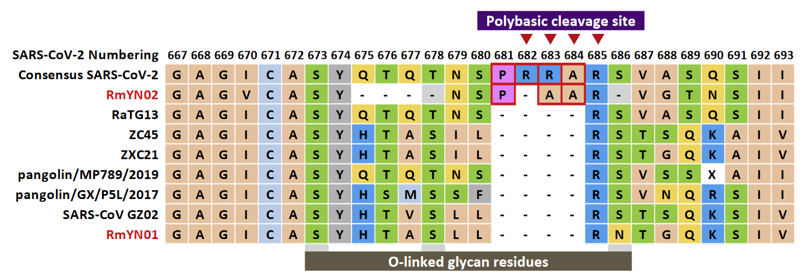
Figure 25: Supposed insertion of PAA as reported by Zhou et al.
Quite conspicuously, around the PAA there are a number of apparent deletions, and as Deigin and Segreto point out:
…no nucleotide alignment of the same region is provided by Zhou et al. that would allow the reader to identify the underlying nucleotides (CCT GCA GCG) coding the claimed PAA insertion in RmYN02 in relation to the other strains analyzed.
So in plainer language, Zhou’s paper sweeps a lot of detail under the rug by their notation of amino acids alone. To remedy this, Deigin and Segreto preformed their own analysis, using the CLUSTAL W algorithm, which took into account the underlying nucleotides that gave them the following alignment:
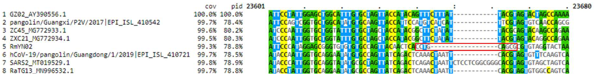
Figure 26: Alignment of RmYN02 preformed by CLUSTAL W, showing a deletion.
In this more granular analysis there is seemingly a 6 nucleotide (2 codon) deletion in comparison to the other listed strains, leaving SARS2’s PRRA as the only insertion at this junction. In further service of this point, Deigin and Segreto remove SARS2 from their analysis, further highlighting the deletion.
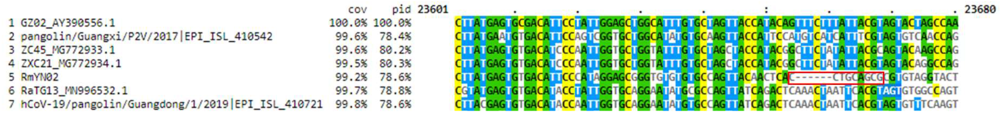
Figure 27: Alignment of RmYN02 preformed by CLUSTAL W, showing a deletion, with SARS2 redacted.
Moreover, they state:
We believe that including SARS-CoV-2 in the alignment together with RmYN02 and other strains is methodologically incorrect, as the implied underlying hypothesis which the analysis is meant to test is that SARS-CoV-2’s PRRA insertion is of natural origin. Thus, including SARS-CoV-2 in the alignment not only biases the alignment algorithm, but also pre-supposes the conclusion that the PRRA insert is, indeed, natural. To prove that inserts like PRRA occur naturally, strains that exhibit similar inserts must be compared to their relative strains, excluding SARS-CoV-2 from the analysis.
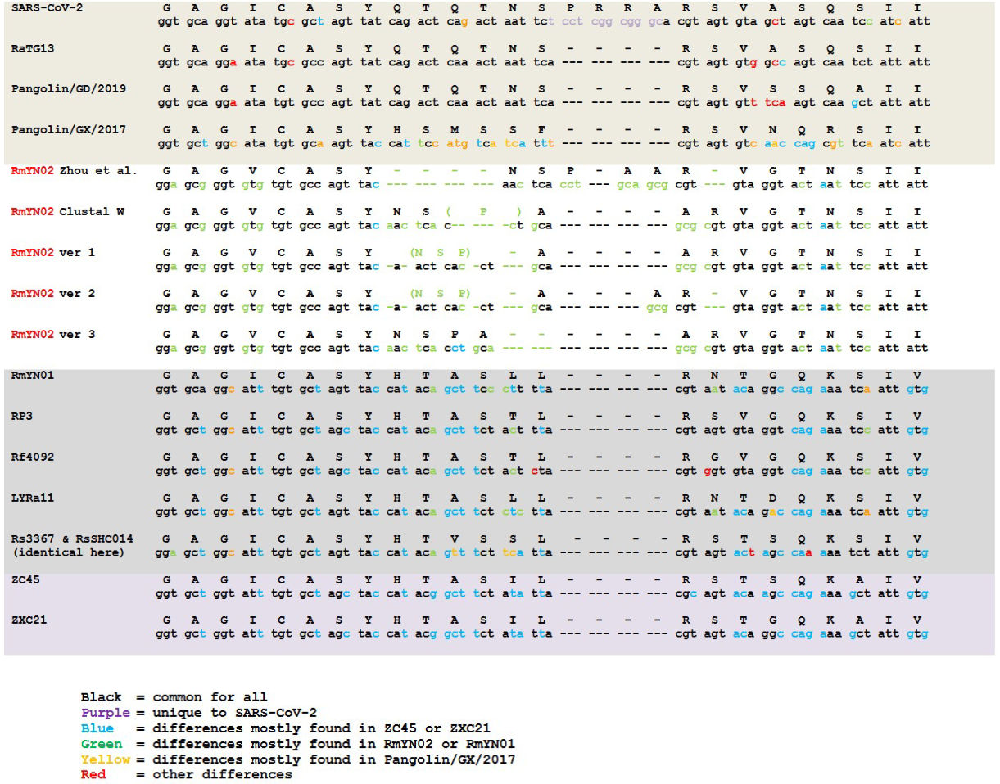
Figure 28: Alternative alignments provided by Deigin and Segreto.
In the above figure, Deigin and Segreto point out that Zhou’s alignment requires not only a 9 nucleotide insertion, but also a 15 nucleotide deletion, so they provide 3 alternatives, along with the CLUSTAL W alignment, each of which is better aligned than Zhou’s and only having, at maximum, a 3 nucleotide insertion.
They put it as follows:
Rather than a complete 12-nucleotide deletion of the region in RmYN02 that corresponds to QTQT in RaTG13 as proposed by Zhou et al., a more parsimonious scenario is a 3-nucleotide deletion split between the first and fourth codons of QTQT, thereby turning it into NSP in RmYN02. Another possibility, proposed by CLUSTAL W, is a 6-nucleotide deletion in the middle of the nucleotides coding for QTN, turning it into a P.
And they then focus in on ver 1 only, comparing it to its closest relatives:
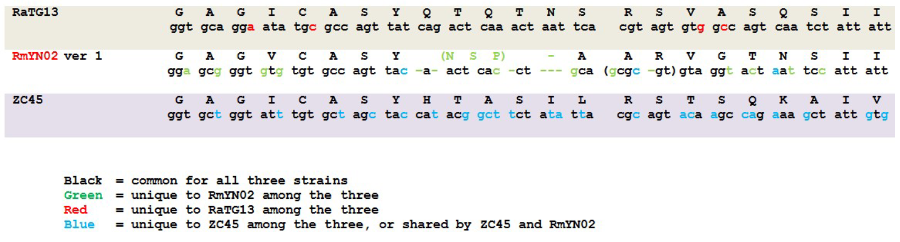
Figure 29: Deigin and Segreto’s ver 1 compared to its relatives
On the other side of the PAA(R) insertion claimed by Zhou et al., we feel that a more parsimonious alignment of RmYN02 is best elucidated via comparing it to its close relative strains ZC45 and RaTG13: in particular, the CGC AGT nucleotides in ZC45 coding for RS align best to the GCG CGT nucleotides in RmYN02, having possibly resulted from an insertion of G and deletion of A nucleotides in RmYN02 relative to ZC45.
3.9.4 Bedford’s counter
Trevor Bedford made his counter in the form of a Twitter thread, pointing to 5 data points.
3.9.4.1 Data point 1
Data point #1 (virus group):
#SARSCoV2 is an outgrowth of circulating diversity of SARS-like viruses in bats. A zoonosis is expected to be a random draw from this diversity. A lab escape is highly likely to be a common lab strain, either exactly 2002 SARS or WIV1. 5/21
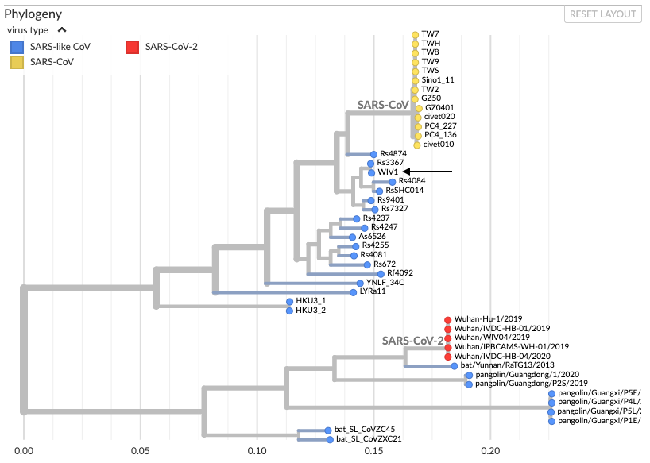
Bedford fails to note here just how dissimilar the CCPVirus is from those bat viruses, and further relies on the WIV to have shared all of their viruses with other labs, indicated by his insistance that it be a “common lab strain.”
Note that previous non-zoonotic outbreaks have been obvious from genetic data, one example being the 1977 “Russian” flu, which was clearly a 1950s human virus that had been in a freezer for 20 years (https://mbio.asm.org/content/6/4/e01013-15). 6/21
And so too is this virus obviously lab-made as I have demonstrated extensively above.
3.9.4.2 Data point 2
Data point #2 (receptor binding domain):
This point is rather technical, please see preprint by @K_G_Andersen, @arambaut, et al at http://virological.org/t/the-proximal-origin-of-sars-cov-2/398 for full details. 9/21
Fucking hilarious, he is citing Andersen. So either Bedford is a shill or he didn’t read that article, as if he had he should have noticed how utterly retarded it is — I, a non virologist, was able to after all.
But, briefly, #SARSCoV2 has 6 mutations to its receptor binding domain that make it good at binding to ACE2 receptors from humans, non-human primates, ferrets, pigs, cats, pangolins (and others), but poor at binding to bat ACE2 receptors. 10/21
This pattern of mutation is most consistent with evolution in an animal intermediate, rather than lab escape. Additionally, the presence of these same 6 mutations in the pangolin virus argues strongly for an animal origin: https://www.biorxiv.org/content/10.1101/2020.02.13.945485v1 11/21
I’m leaning towards shill, how exactly is the fact that it’s better at binding to human ACE2 than that of bats not evidence in favour of this being created through gain-of-function? Is Bedford forgetting that serial passage exists?
3.9.4.3 Data point 3
Data point #3 (market cases):
Many early infections in Wuhan were associated with the Huanan Seafood Market. A zoonosis fits with the presence of early cases in a large animal market selling diverse mammals. A lab escape is difficult to square with early market cases. 13/21
Many are, but not the first ones, that is impossible to square with a market origin.
3.9.4.4 Data point 4
Data point #4 (environmental samples):
33 out of 585 environmental samples taken from the Huanan seafood market showed as #SARSCoV2 positive. 31 of these were collected from the western zone of the market, where wildlife booths are concentrated. 15/21 http://www.xinhuanet.com/english/2020-01/27/c_138735677.htm
Environmental samples could in general derive from human infections, but I don’t see how you’d get this clustering within the market if these were human derived. 16/21
You could get it through either random chance, patient 0 going to that area, or through infected animals being sold to the market by a lab tech, or the director as discussed above (see: 3.6).
3.9.4.5 Data point 5
Data point #5 (location):
This is the only thing that has anything going for it for lab escape. But keep in mind, that there are other labs in China (if this had originated in Beijing, people would be accusing China CDC instead of the Wuhan Institute of Virology). 18/21
Yeah, thank you Sherlock Holmes, if it had released near a different lab that would be the prime suspect. If a murder happened in A’s house whilst A was covered in blood, we would suspect him, if instead B was covered in blood and it had happened in B’s house, we would damn well suspect him.
Still, the Wuhan location is more likely in the lab escape scenario than for the zoonotic scenario. But I believe we’re talking about 1/20 odds rather than than 1/100 or 1/1000, as there are labs in multiple cities. 19/21
>Still, the murder taking place in A’s house makes it more likely that A did it but I still give it 1/20 odds rather than 1/100 or 1/1000, as there are other houses.
Unbelievable.
3.9.5 Stevens’ counter
Christian Stevens of the Mount Sinai School of Medicine, New York, is the author of The Origins of SARS-CoV-2, I shall be dealing primarily with part 3 of that article where he addresses the lab-leak theory.
3.9.5.1 Could SARS-CoV-2 be man-made from pieces of other viruses?
He starts his critique of the lab-leak theory as follows:
Let’s address the first possibility [, that it was made from pieces of other viruses]. To reiterate, most of SARS-CoV-2 comes from a bat coronavirus closely related to RaTG13. This virus is not known to cause disease in humans. If we were virus engineers (and this actually happens to be my job in the Benhur Lee Lab) we would need to:
- Make a virus backbone from a never-before-seen virus that looks like, but isn’t, RaTG13 without having any reason to believe it would be a better starting place than a previously characterized virus (like the original SARS-CoV)
- Spend months to years building a system that is easy to engineer (reverse-genetics system) when there are other virus backbones readily available.
- Choose the RBD region from an unknown pangolin coronavirus even though all computer models show it should be suboptimal at binding ACE2, and show that it binds well in spite of the models (paper 1, paper 2, paper 3, paper 4)
All of these steps sound like bad ideas from a scientist’s perspective: there were easier ways to engineer a coronavirus, and no one would have rationally chosen either the bat virus backbone or the pangolin portion of the spike protein. Therefore, SARS-CoV-2 is unlikely to be man-made from pieces of other viruses—we have zero evidence that any person or lab has attempted even one part of this process.
So step (1) relies on RaTG13 being real, it is more likely that the WIV used various viruses, such as HKU1, or ZC45, or some combination as the backbone for the CCPVirus, then inserted the pangolin RBD along with a PRRA cleavage site.
Step (2) forgets that the virus uses furin as it’s cleavage site, making it easy to engineer.
And step (3) appears to not be aware that the RBD is identical to that of GD Pangolin-CoV, a CoV that was known at the time of this criticism being published.
3.9.5.2 But what if this virus was developed using simulated natural selection in a lab?
This is a good question and one we can answer in a few ways.
First, the likelihood of simulated natural selection stumbling on the near exact RBD from a previously unknown pangolin coronavirus is mathematically unlikely. Much less likely than simply stealing it from the pangolin coronavirus via recombination in nature.
Woah woah woah, let us not discount the possibility that both methods were employed. That is, that it was a chimera that was then further developed using simulated natural selection.
Second, what about the polybasic cleavage site and the o-linked glycan? We have seen, with other viruses, the ability to develop polybasic cleavage sites when put under just the right conditions for long periods of time. While unlikely, this piece of the virus could plausibly be developed through selection in a lab setting. However, what is near impossible is the development of the o-linked glycan addition motif. This is because the pressure to develop this glycan shield requires avoiding an intact immune system. This type of selection cannot occur using cell culture, and there is no known animal model that would allow for selection of human-like ACE2 binding and avoidance of immune recognition. This strongly implies SARS-CoV-2 could not have been developed in a lab, even by a system of simulated natural selection.
Again, don’t discount that it was a chimera that then underwent serial passage, but moreover does this argument not apply even more to natural selection than it does to serial passage? Serial passage being accelerated natural selection.
3.9.5.3 Natural or Unnatural Selection: The Ka/Ks Ratio
In this section Stevens goes over synonymous vs non-synonymous mutations and how one may use them to infer what type of selective pressure has occurred, elaborating as follows:
Because synonymous mutations should have no effect, we expect them to happen at a relatively consistent rate. That makes them a good baseline that we can compare the number of non-synonymous mutations to. By calculating the ratio between these two numbers we can differentiate between three different types of selection:
- Purifying selection: This virus is already a great fit where it is and cannot afford to change because every change makes it worse. You should see very few non-synonymous changes here.
- Darwinian selection: This virus is not a good fit where it is and has to change and get better or it’s going to die out. You should see many non-synonymous changes.
- Neutral selection: There is no pressure on this virus either way. Non-synonymous changes and synonymous changes should come at about the same rate.
We would expect a virus that is learning to exist in a new context would be undergoing Darwinian selection and we would see a high rate of non-synonymous changes in some part of the genome. This would be the case if the virus were being designed via simulated natural selection, we would expect at least some part of the genome to show Darwinian selection.
Ok, not entirely sure why we should expect darwinian selection for a lab virus, surely they would be more likely to be good fits but ok, I’ll take his word for it, let’s see what he is building up to.
In an analysis by Dr. Trevor Bedford [see: 3.9.4] using an open-source program (that you can try at home), he began with the sequences of all viruses related to SARS-CoV-2. He next calculated the Ka/Ks ratios when comparing SARS-CoV-2 to related viruses. He also calculated the Ka/Ks ratio for SARS-CoV-2 to a hypothetical ancestor virus predicted by his program. In his analysis, Dr. Bedford found that 14.3% of the mutations between SARS-CoV-2 and its predicted ancestor resulted in non-synonymous mutations. RaTG13, a natural coronavirus has 14.2% of its mutations as non-synonymous. Both of these numbers indicate a purifying selection, with very few non-synonymous changes. This holds true across the entire genome with no part of it showing Darwinian selection. This is a very strong indicator that SARS-CoV-2 was not designed using forced selection in a lab.
Oh, he is relying entirely on RaTG13 being real. The fact that it isn’t real means we can’t use it as the baseline here, what this is essentially saying is that RaTG13 was already pretty well adapted in the RBD, so this is only evidence that Shi based it on SARS2 rather than some precursor that she used to make SARS2. And when we consider this graph that I used above it looks very silly to talk about non-synonymous changes with RaTG13.
Figure 31: Synonymous vs non-synonymous mutations as discussed above in 3.5.3.4
3.9.6 Scimex counter
Scimex published an article83 in which they include the reaction of four virologists to the lab-leak theory, which I shall address as they are listed.
3.9.6.1 Edward Holmes
Professor Edward Holmes is an evolutionary virologist and a member of the Charles Perkins Centre and the Marie Bashir Institute for Infectious Diseases and Biosecurity at the University of Sydney, he is also one of Andersen’s co-authors from my criticism above (see: 3.9.2).
He states:
The closest known relative of SARS-CoV-2 is a bat virus named RaTG13, which was kept at the Wuhan Institute of Virology. There is some unfounded speculation that this virus was the origin of SARS-CoV-2. However:
- RaTG13 was sampled from a different province of China (Yunnan) to where COVID-19 first appeared; and
- the level of genome sequence divergence between SARS-CoV-2 and RaTG13 is equivalent to an average of 50 years (and at least 20 years) of evolutionary change.
Hence, SARS-CoV-2 was not derived from RaTG13.
I agree that it was not derived from RaTG13, as RaTG13 doesn’t fucking exist. But there is an alternative angle from which to attack this counter; the 50 years of evolutionary change can easily be achieved by serial passage, Holmes should know this.
3.9.6.2 Nigel McMillan
Professor Nigel McMillan is the Director of Infectious Diseases and Immunology at Menzies Health Institute Queensland, Griffith University
His argument is that:
The genetic changes in the virus can be found in two other coronaviruses from bats and pangolins and these are the source hosts. If you were going to design it in a lab the sequence changes make no sense as all previous evidence would tell you it would make the virus worse. No system exists in the lab to make some of the changes found.
So the sequence changes would “make no sense” because we predicted alternative binding previously, this is the terrible Andersen argument that I have debunked above. So moving on, he claims that “[no] system exists in the lab to make some of the changes found.” To which changes is he referring? We have no see’m techology to make seemless changes to genomes, we have the ability to conduct the PRRA insertion and to stitch in a pangolin CoV RBD. We have serial passage to explain the extensive mutation noted by Holmes above. I want to know what change we haven’t already pulled off.
Finally, analysis shows that the sorts of mutations found in the virus are clearly natural and not man-made. All this is outlined in serious detail in an article by Christian Stevens from the Mount Sinai School of Medicine, New York (here).
I address that stevens article above (see: 3.9.5).
3.9.6.3 Nikolai Petrovsky
Nikolai Petrovsky is a Professor in the College of Medicine and Public Health at Flinders University. He is also the Research Director of Vaxine Pty Ltd. He is the lone expert in this article who acknowledges the possibility of lab-leak.
3.9.6.4 Hassan Vally
Associate Professor Hassan Vally is an Epidemiologist and Senior Lecturer in Public Health at La Trobe University.
He says:
There is no substance to this claim and other conspiracy theories about the origin of COVID-19.
We’ve been aware for some time that another coronavirus, like SARS and MERS before it, could cause a pandemic, and so in many ways, the emergence of a new coronavirus with pandemic potential is not a surprise.
Whilst there is absolutely no evidence to support the conspiracy theories being propagated by a few individuals, there actually is evidence to support the natural emergence of the novel coronavirus, with preliminary genotyping studies showing its relationship with other bat viruses. We have to be careful to not aid those irresponsibly using this global crisis for political point-scoring by giving any oxygen to these and other rumours
Yes, it wouldn’t be surprising to see a natural pandemic CoV, but it also isn’t surprising to see a virus created through gain-of-function research causing a pandemic. It seems that what he is saying in the tail there is that it looks like bat CoV’s, therefore it isn’t lab-made. This is among the worst of the virologist reasoning I have addressed in this document.
3.9.7 Robert Garry’s counter
Robert Garry Jr. is a professor at the Tulane University’s School of Medicine.84 In addition to his co-authorship on the Andersen paper, he provides a further counter in an interview85 with This Week in Virology.
3.9.7.1 He Stands By The Andersen Paper
Garry claims in this interview that:86
our conclusion in the analysis was that it was very unlikely that [it] was a constructed virus… and thats held up… our conclusion that it didn’t leak from a lab is even stronger today…
So Garry cannot claim the ignorance of February as a shield against criticism here, he thinks that Andersen’s analysis holds up in late May 2021 when this interview was released. Even after all of the evidence in this document is out on the internet, for free, Garry still endorses the absolute shitstain of a paper that is The Proximal Origin of SARS-CoV-2.
3.9.7.2 Sitting in a Shi
Further along in the most softball interview ever, Vincent who is the main interviewer asks Garry the following question:87
Interviewer: so some people are thinking, “ok, RaTG13 is not close enough but they probably had something close and they just didn’t tell us,” and you’re saying that’s ridiculous.
Robert Garry: I am basically saying there’s no evidence for that — I mean I’ve heard Dr. Shi; I don’t know her, I’ve never met her, we may have been at some conferences together, I have no idea. But when I listen to her talks, you know, I’m not hearing a person that is… involved in a very deep conspiracy…
So Garry’s evidence that there is no evidence, is that he has heard Dr. Shi talk and she just sounds so darn trust-worthy. I should bring up here that I have heard the safety director of Chernobyl talk and boy he sounds just swell — I trust that he isn’t involved in a deep conspiracy to blanket Europe in radiation, because as we know a conspiracy is the only way such a thing could happen, and not dangerous experimentation.
Freelance science journalist and another co-host, Alan Dove, expands on that with the following:88
Alan Dove: It also seems as if, for something like that to have happened, the more you think about it the larger the group of people you would need to be involved at various steps of not only the initial experiment, but also the subsequent coverup. And the probability of keeping something like that secret, particularly when you’re dealing with a group of scientists — I mean for petes sake, these are the worst secret keepers in the world, and they can’t agree on anything, and this large amorphous group of scientists is somehow perfectly keeping all these secrets…
Well thank god Alan just debunked a human origin for all that radiation coming out of Ukraine, now we can start getting to work on finding the natural origin, and the good folk at the Chernobyl reactor can get back to work.
Now the real kicker is when Garry comes back in white knighting for Shi again:
Robert Garry: It’s totally out of character too, alan, because what Dr. Shi and her group [have] been doing for many years since the first SARS outbreak has been to publish these novel viruses…
Forgetting of course RaTG13 which Shi forgot to publish for 7 years, moreover this presupposes that the WIV do publish all of their research, which is exactly what Garry is attempting to show, so he is begging the question. It would be like to show that I wasn’t a liar, I said, “hey look at these times that I told the truth.”
3.9.7.3 WIV Researchers Sick
In a change of subject, Dickson Despommier, brings up the WIV researchers who were sick with Flu symptoms prior to the outbreak, which I discuss above, Garry’s response to that is as follows:89
Robert Garry: I think that’s an intelligence report, and it came at the end of the Trump administration, so you can factor that in however you wish to do that.
…
Robert Garry: But think about that for a little bit, ok, if there were 2/3 people that were sick enough to have to go to the hospital, then there were probably hundreds of people at that institute that actually had some asymptomatic or milder form of COVID-19, and thats just impossible to add up. So the 3 were the tip of the iceberg, but there had to be a lot of other people that were infected. The other point to that is that… they did serology [note: serology means they tested them for the virus] on those people and they were negative, and the institute knows how to do coronavirus serology. So you can say they’re not telling the truth about that either and that becomes yet another lie and coverup.
I’m not entirely sure why Garry splits it up by saying the other point, because to take this as 2 separate points is to make his primary argument against people being sick at the lab the fact that people would have to be sick at the lab, but considering some of the reasoning in the Andersen paper I wouldn’t put it past him. Now to address the other point, he relies entirely on WIV data, to prove the WIV’s innocence. In other words it’s the old, “we have investigaged ourselves and found no wrongdoing.”
Now I need to mention here, because they really start to hone in on the fact that this was released by the Trump administration, that the Biden Administration is continuing the lab-leak investigation and a senior State Department official under Biden told Josh Rogin of The Washington Post that:90
No one is disputing the information, the fact that these data points exist, the fact that they are accurate.
So this is absolutely not something that the Trump administration just made up, as Dove would love to point out, it would take a great number of people, who disagree on a lot, to cover this up. And this was all over 2 months before the interview was published to youtube, giving the commentators ample opportunity to hear of it.
In between the choruses of orange man bad Robert Garry was able to get out that his colleague, Andrew Rambaut, who is yet another co-author on the Andersen paper, estimates that the virus may have originated in october.91 Now doesn’t October sound familiar? Where have I heard that? Oh yeah! The WIV shut down in mid October and that’s around about when those researchers were sick with flu symptoms. Funny that Garry skimmed over that little detail.
3.9.7.4 To B or no to B
Later, Garry finally brings an interesting argument to the table:92
Robert Garry: Everybody’s heard about the B lineages… there’s also an A lineage… the A to B lineage split happened very early in the city of Wuhan, and the WHO report is very granular, very clear about this…
Robert Garry: All of the cases at the Huanan market were B lineage, [but] there are other cases that are A lineage that are linked to other markets. So what that means is that any theory of the origins of SARS-CoV-2 has to account for, you know, not just the linkage to the market, but the linkage to different lineages of the virus at different markets.
Robert Garry: Now… if the viruses emerged through the wildlife trade that’s pretty easy to imagine, right? There was an animal or a group of animals, you know maybe one animal passed it to another, but [the] difference between A and B at that time is only 2 or 3 steps, only 2 or 3 nucleotide changes. So that could have easily occurred in the jump from one species of animal to another, [and] then all you have to imagine is that theres a group of animals that are coming from those farms in the south of China to the central city of Wuhan which is a distribution hub for a lot of different types of commerce, including the wildlife trade…
Robert Garry: You had an animal or 2 that was infected with lineage A, they went to some of these other markets, you had another animal infected with lineage B, that went to the Huanan market.
And my retort is quite simple, let us replace those animals that are infected with the different lineages and went to different markets with lab workers who were infected with different lineages and went to different markets. In a way it’s more believable to me that different lab workers would have different markets that they pick their dinner up from than it would be that a dealer would split up a group of infected animals and sell them off to all of these different markets, especially considering no bat or pangolin was sold at the Huanan market.
3.9.7.5 “If there’s evidence, bring it forth!” — Daszak
In the podcast there is a segment where each host talk about an article they find interesting in what they call their “pick of the week.” Both the main host, Vincent, and Robert Garry pick an article in Nature by Amy Maxmen entitled, Divisive COVID ‘lab leak’ debate prompts dire warnings from researchers. About this, they say the following:93
Vincent Racaniello: It’s OK, we can do a double pick, it’s a great article, and this is why — you know the Science letter from the scientists, Tony Fauci and other scientists suddenly saying, “yeah, this is possible, we should look into it,” … it’s just crazy, because theres no evidence, as you have said, there’s no evidence for a lab-leak, there’s plenty of evidence for a natural origin.
Robert Garry: Yeah, there’s real data, there’s real epidemeology, there’s real precedent for it. For the lab-leak? Not so much.
Alan Dove: I would like to just jump in and defend Tony a little bit here, and maybe smear my own profession a little bit — he tends to be very selectively quoted, and he even complianed about this when he came on the show… yeah, he did say we should investigate this but, I don’t think that’s inconsistent with anything he has said before, he has still maintained, even just this past week, that this is highly unlikely… he will agree, “yeah, of course it’s something we should investigate, if we find any evidence we should follow it, we should look for evidence of that,” of course!
Vincent Racaniello: As Peter Daszak said, “hey, if anybody has evidence about the institute, let us know! We didn’t find any.”
Hopefully Alan got many headpats for his little defence of lord Fauci there, I would like to put forth now, on the record, that I challenge every single virologist I criticise in this document to a recorded debate. If they think that there is no evidence they should wipe the floor with me. It can be on their channel in front of a friendly audience if they wish, so long as my channel is linked in the description. Moreover I want to highlight again that the WHO report that Daszak mentions there cites only the Andersen paper as proof that there wasn’t a lab leak, this is one big circlejerk.
3.9.7.6 Dove’s Appeal to Morality
After some hilarious back and forth where they started claiming that they were in the minority after previously claiming to have the biggest article of the year, Dove swoops in with the world’s smallest violin:94
Alan Dove: One thing I try to point out whenever this comes up is, the people who are arguing, “oh, it could have come from a lab…” You know, when you say stuff like that… you’re lodging charges against identifiable people. This is not a trivial matter, this is something where there are individuals, the lab has a director who is responsible for it, and you’re saying, “they screwed up, and they’re covering up.” I mean, thats the charge that is being lodged, when you make this argument. I’m not saying that we… can say that it’s impossible, but just, we need to approach this with scepticism and we need to insist on actual evidence and not just speculate.
I would like to be absolutely clear that I am indeed accusing the Wuhan Institute of Virology of the creation of the virus that has now killed over 3 million people, I do not shy away from this. They did screw up, and the CCP is covering it up.
3.9.7.7 The Furin Cleavage Site
About half way in they wiggle their way around and onto the topic of the furin cleavage site, which I have described above and shown it to be a strong piece of evidence in favour of lab-leak, let’s see what the TWiV team say:95
Vincent Racaniello: Robert, can we talk about the furin site because, in fact, I think this has fuelled a lot of the recent discussion — a very prominent virologist [note: they are talking about David Baltimore] said the furin site is a “smoking gun” for the lab origin of SARS-CoV-2, so let’s debunk that please.
Robert Garry: OK, well I know the virologist you’re talking about and he’s a brilliant guy, but unfortunately I don’t think that he looked at it very closely. Or else he wouldn’t have come out with that statement, and hopefully he will set the record straight at some point in the future, when he does… take a look at the actual data.
…
Robert Garry: Why do I think that’s not [an] engineered insertion?… When you first look at it, when somebody like David Baltimore looks at it and says, “oh, it’s not there in the other sarbecoviruses,” or the closely related ones, “that’s unusual.” I mean, you know, yeah, frankly when I saw it, I lost a little sleep over that too… but when you delve down into it, when you actually look at what those 12 nucleotides are… you would realise that no experienced virologist would have inserted that sequence in that way, or even have known how to do that.
Robert Garry: Ok, so first of all, the proline that’s in front of the furin cleavage site… that proline actually makes some sense when you have SARS-CoV-2 to guide you, because there are other coronaviruses that have prolines in that similar location, but until you saw SARS-CoV-2 [you] didn’t know that that might be something that you might want to put in there. So I don’t think there was any virologist on the planet that said, “OK, maybe let’s put a proline [in front of that site (actual words unintelligable due to laughter by the others)]”
It’s nice to know that Robert Garry has no notion of what experimentation incurs, that very frequently people looking to innovate will do crazy things. Some medieval blacksmith decided he would pre-roast his iron and that improved the quality of his steel, this is because it removes sulfur, he had no theoretical basis to do it though, he just decided to experiment. Alexander Flemming had no pre-planned intention to have mould infect his cell cultures, but the fact that it did allowed for the discovery of penicillin. When East German experts decided to design the perfect car, we were left with the trabant. What seems rational to an expert sitting behind a desk and imagining what would be optimal is rarely as good as what actual experimentation is able to pull off, and experimentation requires you to do things you don’t already know the answer to, including putting a leading proline into your insertion.
Robert Garry: The other thing is that the RRAR, the furin cleavage site, is a minimal furin cleavage site, the actual sequence should be RxAR, so some other amino acid, not the argenine there. So thats a minimal furin cleavage site, if you were a virologist studying this… you would have probably put in, you know, RRAR… or maybe even better than that, RRARR… something to make it into a more efficient furin cleavage site.
So he states that the actual sequence should be RxAR, this is untrue. As I explained abode the pattern is RxxR, and this doesn’t in any way discount those x’s from being R’s which he then states by saying:
you would have probably put in, you know, RRAR
I am forced to assume he misspoke here, because RRAR is what the ccpvirus’ cleavage site looks like, and it is known to be very efficient. Now, I’m not entirely sure where he is getting the idea that RRARR would be more efficient,
Robert Garry: So the other thing is that, you know, there are a lot of these furin cleavage sites in β-coronaviruses, I think that one article by Nicholas Wade basically said, “It’s not in any other β-coronaviruses.” Now he corrected that when he put in his quote from Dr. Baltimore, but there are in fact a lot of other β-coronaviruses that have furin cleavage sites. I mean the big example is MERS, but there [are] also human coronaviruses, [HCoV-]OC43 [note: this is the common cold], HKU1, these are β-coronaviruses that have furin cleavage sites, so it’s not so unusual.
Robert Garry: In fact, there are 5 sub-genuses of β-coronaviruses, we know that 4 out of the 5, now including the sarbecoviruses, have viruses with furin cleavage sites. So it would almost be unusual if you didn’t eventually find a sarbecovirus that had one of these things.
Robert Garry: So the other thing, I can go on, we mentioned this early on in the proximal origins paper, that proline and some of the surrounding sequences, some of the serines [S] there and thereonines [T] actually [we predict] that you would have O-linked glycans put on there.
…
Robert Garry: We speculated in the paper that, you know, maybe it’s somehow or another protecting the site from the immune system, it looks like now it’s probably more likely that it’s doing something with regulating the cleavage… the point I’m going to make is that those O-linked glycans are also present in other S1/S2 junction sites in viruses that either have the furin site or they don’t have it.
…
Robert Garry: Going back to our hypothetical virologist, the one that is better than anybody else I know and probably anybody else you know, that had the insight to design this furin cleavage site, [firstly they wouldn’t have said,] “let’s put a proline there, let’s design it so that we have O-linked glycans so it gets regulated in the most optimal way when it gets into an animal.”
Rich Condit: So the other comment thats made about the furin cleavage site, if I understand it correctly is that the actual codon usage in the site is somehow suspicious, could you comment on that?
Robert Garry: Sure, I’ll make 2 comments about that; the other thing experienced virologists would [probably] not do is put that insertion out of frame… you would put 12 nucleotides in perhaps, maybe, but you wouldn’t put them out of frame.
3.10 So assuming it’s natural…
Ok, so let’s see which story is more likely based on the evidence we have.
3.10.1 It’s natural
This means that a horseshoe bat, with a range of 50km, passes some RaTG13-like virus to one of a few thousand pangolins in the world, in a different country, and this pangolin happens to already be infected with GD Pangolin-CoV, or similar. Then a recombination swaps the RBD of the bat virus with that of the pangolin, this new virus then picks up a PRRA (furin) cleavage site from some 3rd virus in a similar manner, and then this pangolin infects a human, who incubates the virus and takes a 1500km road trip to Wuhan, all without infecting anyone. So we have 2 cross-species transfers of a virus made from 3 parents.
Around this time the WIV decide they want to shut down for a week, just for fun and after that miracle virus has reached Wuhan and began spreading the CCP decide to dissapear Huang Yanling, again, just for fun. Then a WIV researcher has her identity stolen by someone who looks just like her, with her ID, and access to her Weibo account, and this identity theif decides that instead of robbing her they’ll just accuse the WIV director of selling lab animals to the Huanan Seafood Market, once more, just for fun.
3.10.2 It’s lab-made
Or… someone was monkeying about with technologies we already have, in a military lab, that has not been inspected by foreign teams, trying to make an infectious disease, as is routinely done, as proven by prior papers and Shi’s grant proposals, and then some accident happened around the 6th - 11th of October.
I know, it sounds silly just suggesting that such a thing could have occurred in a lab with a track record of incompetence, in a nation that regularly covers up its misdeeds.
4 This research would not be without precedent
Scientists have been monkeying around with viruses for years, and these viruses often escape.
The smallpox virus escaped three times from labs in England in the 1960’s and 1970’s,96 causing 80 cases and 3 deaths, the 2007 foot and mouth outbreak emerged in a similar manner. The 1977 H1N1 pandemic was caused by a leak from a Chinese facillity.97 The 1995 Venezuelan equine encephalitis (VEE) outbreak was also caused by a lab-leak.98 The USSR caused the 1971 Aral smallpox incident,99 in 1971 they caused both a self-inflicted marburg virus infection,100 and the Sverdlovsk Anthrax Leak.101 There was also a self-inflicted ebola infection at a former Soviet bio-weapons lab in 2004.102 A bubonic plague outbreak in Chicago was caused by a 2009 lab-leak.103 Notably, the SARS1 virus has proved a true escape artist, leaking from laboratories in Singapore,104 Taiwan,105 and no less than four times from the Chinese National Institute of Virology in Beijing.106 The reason SARS1 was so hard to contain was the lack of a vaccine, giving researchers no protection after exposure.
Researchers at the CDC have recreated the 1918 flu virus,107 the almost-extinct polio virus has been synthesized from its published genetic sequence.108 The WHO have backed research that introduces smallpox genes into releted poxviruses.109 In 2007 the WIV were conducting research into the creation of novel coronaviruses via the insertion of HIV genes to allow for greater infectivity.110 Again in November 2015 they created a novel virus by taking the backbone of the SARS1 virus and replacing its spike protein with one from another bat virus (known as SHC014-CoV).111 The WIV have injected their viruses into live animals to study symptoms,112 and they have used bat coronaviruses to test their disinfecting methods.113
This research is neither unheard of nor is the escape of viruses from labs. It would stand to reason that it was merely a matter of time until the two events would intersect, that is, it was merely a matter of time until a lab-made virus would escape.
5 Notable Lab-Leak Supporters
5.1 Luc Montagnier
Luc Antoine Montagnier is a French virologist and joint recipient, with Françoise Barré-Sinoussi and Harald zur Hausen, of the 2008 Nobel Prize in Physiology or Medicine for his discovery of the human immunodeficiency virus.
- says it was an attempt to make an HIV vaccine, possibly carrying on from their research in 2001 that I note above (see: 4)
5.2 Anthony Fauci
After shilling for china for over a year, recently Fauci has relented to pressure from Rand Paul and his contemporariaes and has admitted that lab-leak is “higly likely.”
5.3 Investigate the origins of COVID-19
This paper in Science magazine, giving weight to lab-leak, features 18 prominent signatories as follows:
- Jesse D. Bloom 1,2,
- Yujia Alina Chan 3,
- Ralph S. Baric 4,
- Pamela J. Bjorkman 5,
- Sarah Cobey 6,
- Benjamin E. Deverman 3,
- David N. Fisman 7,
- Ravindra Gupta 8,
- Akiko Iwasaki 9,2,
- Marc Lipsitch 10,
- Ruslan Medzhitov 9,2,
- Richard A. Neher 11,
- Rasmus Nielsen 12,
- Nick Patterson 13,
- Tim Stearns 14,
- Erik van Nimwegen 11,
- Michael Worobey 15,
- David A. Relman 16,17,*
- Basic Sciences and Computational Biology, Fred Hutchinson Cancer Research Center, Seattle, WA 98109, USA.
- Howard Hughes Medical Institute, Chevy Chase, MD 20815, USA.
- Stanley Center for Psychiatric Research, Broad Institute of Massachusetts Institute of Technology and Harvard University, Cambridge, MA 02142, USA.
- Department of Epidemiology and Department of Microbiology & Immunology, University of North Carolina at Chapel Hill, Chapel Hill, NC 27599, USA.
- Division of Biology and Biological Engineering, California Institute of Technology, Pasadena, CA 91125, USA.
- Department of Ecology and Evolution, University of Chicago, Chicago, IL 60637, USA.
- Dalla Lana School of Public Health, University of Toronto, Toronto, ON M5S 1A8, Canada.
- Cambridge Institute of Therapeutic Immunology & Infectious Disease, Cambridge, UK.
- Department of Immunobiology, Yale University School of Medicine, New Haven, CT 06519, USA.
- Department of Immunology and Infectious Diseases and Center for Communicable Disease Dynamics, Department of Epidemiology, Harvard T. H. Chan School of Public Health, Boston, MA 02115, USA.
- Biozentrum, University of Basel and Swiss Institute of Bioinformatics, Basel, Switzerland.
- Department of Integrative Biology and Department of Statistics, University of California, Berkeley, CA 94720, USA.
- Department of Human Evolutionary Biology, Harvard University, Cambridge, MA 02138, USA.
- Department of Biology and Department of Genetics, Stanford University, Stanford, CA 94305, USA.
- Department of Ecology and Evolutionary Biology, University of Arizona, Tucson, AZ 85721, USA.
- Department of Medicine and Department of Microbiology & Immunology, Stanford University School of Medicine, Stanford, CA 94305, USA.
- Center for International Security and Cooperation, Stanford University, Stanford, CA 94305, USA.
↵* Corresponding author. Email: relman{at}stanford.edu
5.4 Nicholas Wade
Nicholas Wade is a prominent author and journalist, he worked as the staff writer for The Science Times section of The New York Times from 1982 to 2012.
5.5 Donald McNeil Jr.
Donald Jr. is another esteemed journalist, wormking as a science and health reporter for The New York Times, specialising in reporting on disease outbreak. His reporting on the CCPVirus earned him widespread recognition for being one of the earliest and prominent voices covering the pandemic. He recently penned an article in Medium where he threw his weight behind the lab-leak theory.
6 Conclusion
3 000 000 is a hard number to get your head around, it is incredibly huge. I do not think that I am better at virology than the virologists that I have criticised in this document. I think at least a few of them are well aware that they have shovelled intellectual shit onto this situation. I doubt their intentions are so one dimensional as wanting to please daddy Xi, at least for most. They probably take the same view as Antonio Regalado, that it would “shatter the scientific edifice.” But I want them to think hard about those 3 000 000 people, I want them to think about their families. I imagine most of these virologists would hate holocaust deniers, I want them to know that they are at least half as bad, and counting…
7 References
In making this I referenced works by the other listed authors, in alphabetical order, as follows (note: none of them are aware of this work and they have not endorsed it):
- Nerd Has Power, “RaTG13 – the undeniable evidence that the Wuhan coronavirus is man-made”
- Nicholas Wade, “Origin of Covid — Following the Clues”
- Project E, “Evidence SARS-CoV-2 Emerged From a Biological Laboratory in Wuhan, China”
- Yuri Deigin, “Lab-Made? SARS-CoV-2 Genealogy Through the Lens of Gain-of-Function Research”
Footnotes:
“Polish Victims”. United States Holocaust Memorial Museum. Retrieved 30 October 2020. “It is estimated that the Germans killed between 1.8 and 1.9 million non-Jewish Polish civilians during World War II. In addition, the Germans murdered at least 3 million Jewish citizens of
Banki, Judith Herschcopf; Pawlikowski, John (2001). Ethics in the Shadow of the Holocaust: Christian and Jewish Perspectives. Rowman & Littlefield. p. 93. ISBN 978-1-58051-109-4. “…Along with those three million Polish Jews, three million Polish civilians were murdered as well….”
Cherry, Robert D.; Orla-Bukowska, Annamaria (2007). Rethinking Poles and Jews: Troubled Past, Brighter Future. Rowman & Littlefield. p. 52. ISBN 978-0-7425-4666-0. “…and the ruthlessness of German rule in Poland, where three million gentiles also perished and the punishment for hiding a Jew was execution of captured rescuers and their immediate families.”
“Documentation Center of Cambodia (DC-Cam)”. www.d.dccam.org.
“Welcome | Genocide Studies Program”. gsp.yale.edu.
Heuveline, Patrick (2001). “The Demographic Analysis of Mortality in Cambodia”. In Reed, Holly E.; Keely, Charles B. (eds.). Forced Migration and Mortality. Washington, DC: National Academy Press.
The Quality of Mercy: Cambodia, Holocaust, and Modern Conscience. Touchstone. 1985. pp. 115–16.
Ginsborg, Paul (2014). Family Politics: Domestic Life, Devastation and Survival, 1900-1950. Yale University Press. p. 100. ISBN 9780300211054.
Adalian, Rouben Paul (2004). “Armenian Genocide”. Washington, DC: Armenian National Institute. Retrieved August 13, 2016.
McDoom, Omar Shahabudin (2020). “Contested Counting: Toward a Rigorous Estimate of the Death Toll in the Rwandan Genocide”. Journal of Genocide Research. 22 (1): 83–93. doi:10.1080/14623528.2019.1703252. S2CID 214032255. “If one examines the claims for the overall number killed, at the higher end lies the figure of 1,074,017 Rwandan dead. This number originates with the Rwandan government which conducted a nationwide census in July 2000, six years after the genocide. Toward the lower end lies an estimate from Human Rights Watch, one of the first organizations on the ground to investigate the genocide, of 507,000 Tutsi killed… I have estimated between 491,000 and 522,000 Tutsi, nearly two thirds of Rwanda’s pre-genocide Tutsi population, were killed between 6 April and 19 July 1994. I calculated this death toll by subtracting my estimate of between 278,000 and 309,000 Tutsi survivors from my estimate of a baseline Tutsi population of almost exactly 800,000, or 10.8% of the overall population, on the eve of the genocide… In comparison with estimates at the higher and lower ends, my estimate is significantly lower than the Government of Rwanda’s genocide census figure of 1,006,031 Tutsi killed. I believe this number is not credible.”
Guichaoua, André (2020). “Counting the Rwandan Victims of War and Genocide: Concluding Reflections”. Journal of Genocide Research. 22 (1): 125–141. doi:10.1080/14623528.2019.1703329. S2CID 213471539.
Sharri Markson, Ashleigh Gleeson, “The Covid Files: How the Red Army oversaw coronavirus research”
Sharri Markson, Ashleigh Gleeson, “The Covid Files: How the Red Army oversaw coronavirus research”
Matthieu Boulesteix, et al. “Differences in Genome Size Between Closely Related Species: The Drosophila melanogaster Species Subgroup”
Banavali, Nilesh K. (2013). “Partial Base Flipping is Sufficient for Strand Slippage near DNA Duplex Termini”. Journal of the American Chemical Society. 135
Citation needed for this, I cannot find where I read that so take with a grain of salt.
Zhou P, Yang XL, Wang XG, Hu B, Zhang L, Zhang W, et al. A pneumonia outbreak associated with a new coronavirus of probable bat origin. Nature. 2020.
Ge XY, Li JL, Yang XL, Chmura AA, Zhu G, Epstein JH, et al. Isolation and characterization of a bat SARS-like coronavirus that uses the ACE2 receptor. Nature. 2013;503(7477):535-8.
Zeng LP, Gao YT, Ge XY, Zhang Q, Peng C, Yang XL, et al. Bat Severe Acute Respiratory Syndrome-Like Coronavirus WIV1 Encodes an Extra Accessory Protein, ORFX, Involved in Modulation of the Host Immune Response. J Virol. 2016;90(14):6573-82.
Hu B, Zeng LP, Yang XL, Ge XY, Zhang W, Li B, et al. Discovery of a rich gene pool of bat SARS-related coronaviruses provides new insights into the origin of SARS coronavirus. PLoS Pathog. 2017;13(11):e1006698.
Yount, Boyd & Denison, Mark & Weiss, Susan & Baric, Ralph. (2002). Systematic Assembly of a Full-Length Infectious cDNA of Mouse Hepatitis Virus Strain A59. Journal of virology. 76. 11065-78. 10.1128/JVI.76.21.11065-11078.2002.
Note this tweet (archived) by Deigin that shows the quoted tweet (archived) to be unavailable, yet the tweet has not been deleted, indicating that Andersen has blocked Deigin.
Rossana’s tweet (archived), where she references this tweet (archived) by Andersen, or another one (archived) showing her to also be blocked by Nature, Rasmussen, Daszak, and Holmes.
Ken Alibek, “Biohazard” p. 128
Meselson, M.; Guillemin, J.; Hugh-Jones, M.; Langmuir, A.; Popova, I.; Shelokov, A.; Yampolskaya, O. (18 November 1994). “The Sverdlovsk anthrax outbreak of 1979”. Science. 266 (5188): 1202–1208. doi:10.1126/science.7973702. ISSN 0036-8075. PMID 7973702.